1Арка в светящейся стене
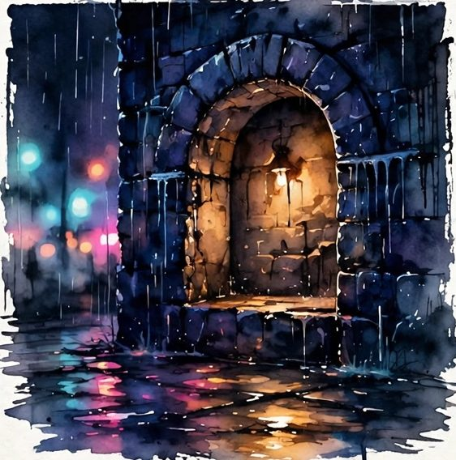
В мокрой стене ночного города, где свет не умолкает ни на минуту, арка открывает тёплую глубину — и в ней, как в ладони, держится тишина.
Ночной город умеет сиять без передышки. Витрины, вывески, мокрый асфальт, туман над перекрёстками — всё умножает свет, всё торопится быть замеченным, и в этом ровном, почти торжественном сиянии стена вдруг делает паузу: в ней открывается арка, очерченная камнем и лёгкой тенью.
Арка не спорит с городом и не гасит его огней. Она лишь обозначает границу, за которой свет становится тише, а камень — теплее на взгляд, словно стена на мгновение вспомнила руки, которые её складывали, и голоса, которые звучали под ней в прежние, более медленные годы.
Переступить эту черту — значит не уйти, а остаться иначе. Здесь дождь слышится ближе, шаги звучат яснее, и первый же взгляд внутрь понимает простую вещь: ниша начинается не с темноты, а с меры света — ровно той, что достаточна для одного человека, одной вещи и одного спокойного вздоха.
2Углубление, которое не ведёт наружу
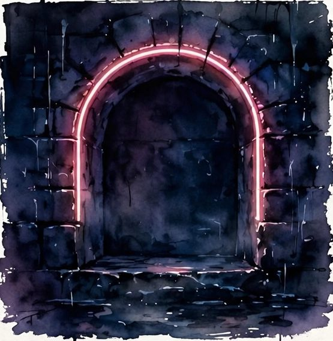
Пустое углубление в тёмной стене обведено слабым неоновым ободком — и эта пустота не зовёт дальше, а предлагает остаться.
Есть углубления, которые обещают проход: за ними угадываются двор, переулок, другая улица. Это углубление ничего не обещает. Оно заканчивается той же стеной, только ушедшей вглубь на ладонь, на локоть, на глубину поставленной вещи — и в этой конечности заключён его особый, тихий смысл.
Ниша не ведёт наружу, потому что её назначение — не путь, а место. Город вокруг измеряется движением: надо успеть, надо перейти, надо догнать огни следующего квартала. Здесь же движение впервые становится необязательным, и человек, остановившийся у пустого углубления, вдруг замечает, как устали его плечи.
Пустота внутри не пугает, а приглашает к мере. Сколько нужно, чтобы место стало своим? Иногда — только это: стена, отступившая ровно настолько, чтобы тень легла мягко, дождь не доставал, а свет падал сбоку, не ослепляя, и долгое ожидание большого наконец сменилось малым и верным.
3Город, который не гаснет
Этот город не знает часа, когда гаснет последнее окно. Когда одни витрины закрываются, другие вспыхивают ярче; когда стихает одна улица, гул переходит на соседнюю, и ночь здесь — не перерыв в жизни, а её другая, более блестящая и более одинокая половина.
Жить в городе, который не гаснет, — значит учиться различать свет. Есть свет, который требует внимания и платит за него усталостью. Есть свет рекламный, свет спешащий, свет равнодушный. А есть — редкий и потому драгоценный — свет, который просто держится в одном месте и никого ни к чему не зовёт.
Ниша рождается из этого различия. Она не против города: она его внимательный читатель. Из всего ночного сияния она берёт один отсвет, из всего шума — один приглушённый тон, и складывает из них угол, где непрерывность города впервые перестаёт давить и становится фоном, почти музыкой за стеной.
4Что держит ниша, когда всё сияет
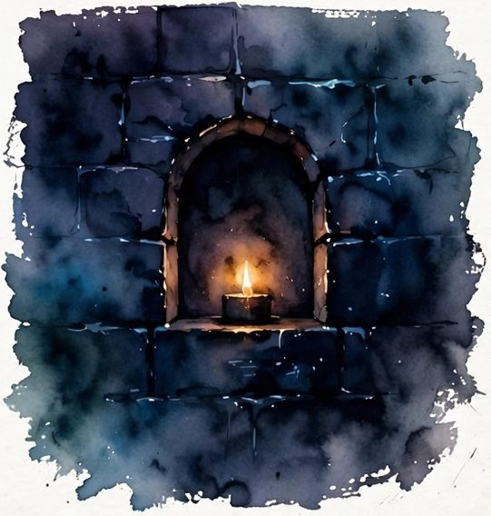
Тёплая точка малого света горит в глубине алькова — и больше ничего не нужно, чтобы сияющий город отступил на шаг.
Когда всё сияет, держать — труднее, чем светить. Сияние размывает очертания: в сплошном блеске мокрых фасадов и хромированных витрин предметы теряют вес, лица — выражение, а вещи — своё единственное место. Ниша держит именно очертание: тень по краю, глубину, границу между своим и общим.
Она держит малый свет так, как ладонь держит огонёк: не сжимая и не выставляя напоказ. Тёплая точка в глубине алькова не соревнуется с неоном улицы — она живёт по другому закону, где достаточно значит больше, чем ярко, а долго значит больше, чем громко и заметно.
И ещё ниша держит паузу. В городе, где всё происходит одновременно, она сохраняет последовательность: сначала — войти, потом — поставить вещь, потом — посидеть молча. Кто однажды почувствовал эту неторопливость на фоне всеобщего сияния, тот начинает беречь её, как берегут ровное дыхание в долгой дороге.
5Дождь по камню, свет по дождю
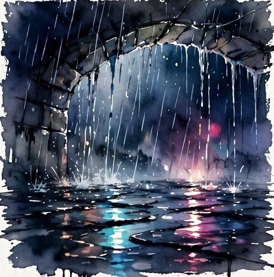
Дождь стекает по камню под аркой, и каждая капля на мгновение принимает в себя свет улицы, прежде чем упасть и погаснуть.
Сначала был камень, потом на камень лёг дождь, а потом по дождю заскользил свет — так в этом городе устроен всякий вечер. Стена намокает и темнеет, её неровности становятся виднее, и неон, отражённый в мокрой поверхности, дрожит, как дрожит отражение в медленно текущей воде.
Под аркой дождь звучит иначе, чем на открытом месте. Капли падают реже, но слышнее: каждая успевает отделиться от карниза, пролететь полосу тёплого света и только потом коснуться камня. В этом коротком полёте — весь характер ниши: малое событие, которому дано время произойти целиком, от начала до конца.
Свет по дождю — учитель внимания. Он не задерживается ни на чём и потому показывает всё: край штукатурки, старый кирпич под ней, провод, вьющийся вдоль стены, как плющ. Посидеть под аркой в такой вечер — значит согласиться, что красота может быть негромкой, недолгой и всё равно достаточной.
6Стена, отступившая на полшага
Вся ниша — это полшага. Не комната, не зал, не убежище в полном смысле слова, а ровно столько, сколько стена согласилась уступить: полшага вглубь от общей линии фасада. И удивительно, как много умещается в этой уступке, если мера взята точно и без скупости.
Полшага — это глубина, на которой дождь уже не достаёт, а улица ещё слышна. Это глубина полки, на которой становится чашка; глубина плеч человека, прислонившегося к тёплой штукатурке; глубина тени в полуденный час. Архитектура больших величин здесь молчит — говорит архитектура малых и верных.
Есть скромность, которая дороже щедрости. Стена могла не отступать вовсе: город умеет строить впритык, без зазоров и пауз. Но она отступила — и в образовавшейся малости человек получил то, чего не дают широкие площади: место, соразмерное ему одному, где не нужно ни возвышать голос, ни занимать оборону.
7Тепло одного угла
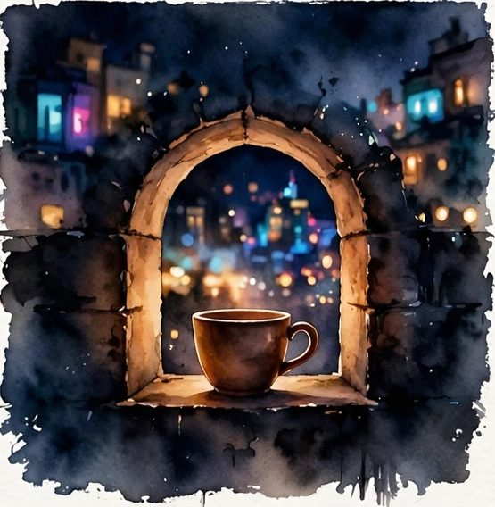
Одна чашка стоит в тёплом алькове, а за её спиной, за тонкой чертой тени, сияет и шумит весь ночной город.
Тепло редко бывает общим. Оно собирается в углах: там, где сходятся две стены, где свет падает не сверху, а сбоку, где воздух меньше движется и дольше помнит дыхание, пар над чашкой и ладонь, согревшую камень. Один угол может согреть то, что не согревает целое здание.
В этом углу тепло — не температура, а отношение. Вещи здесь стоят близко друг к другу не от тесноты, а от согласия: чашка — рядом с книгой, книга — рядом с малой лампой, лампа — рядом со стулом. Каждой вещи тепло от соседней, и человеку, севшему в этот круг, достаётся его доля.
Город за аркой продолжает сиять холодным и великолепным светом, и пусть сияет. Угол не ревнует и не соревнуется: его дело — держать своё малое тепло всю ночь, до самого утра, чтобы всякий, кто вернётся сюда после долгой улицы, нашёл его таким же, каким оставил, — тихим, верным и достаточным.
8Неон дышит, ниша молчит
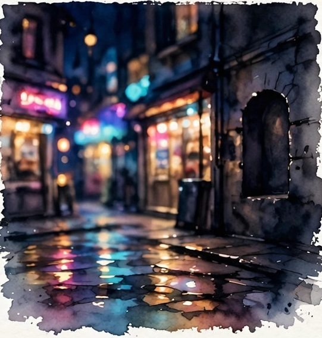
Сияние ночных витрин размыто дождём и туманом, а в тени стены ниша молчит так ровно, что её молчание слышно.
У неона есть дыхание: он вспыхивает и пригасает, набирает силу и уходит в полутьму, словно город за стеной то приближается, то отдаляется. За мокрым стеклом, за пеленой тумана это дыхание видно особенно хорошо — свет живёт, волнуется и ни минуты не остаётся равным себе.
Ниша на это дыхание отвечает молчанием. Не враждебным и не обиженным — молчанием вещи, которой нечего добавлять. В ней нет мигающих букв и сменяющихся картин: одна поверхность, один отсвет, одна тень. И странным образом именно её неподвижность позволяет наконец разглядеть, как красив качающийся свет улицы.
Молчание здесь — не отсутствие, а присутствие другого рода. Как в музыке пауза держит фразу, так ниша держит улицу: без её тишины сияние города было бы только шумом света. Посидеть в ней — значит на время стать этой паузой и услышать город целиком, впервые не заслоняя его собой.
9Пустая ниша в шумной стене
В стене, где каждый метр занят витриной, вывеской или экраном, пустая ниша выглядит почти дерзостью. Вокруг всё продаёт, зовёт и объясняет — а здесь ничего: чистая глубина, ровная штукатурка, слабый отсвет сбоку. И именно к этой пустоте взгляд возвращается снова и снова, отдыхая.
Пустота эта не бедность, а готовность. Ниша не заполнена, потому что её вещь ещё не пришла — или уже ушла, оставив место лёгким и чистым. В шумной стене, где всё давно распределено и подписано, незаполненное место читается как обещание: здесь ещё возможно начало, здесь есть куда поставить главное.
Хорошо, что город не всё в себе занял. Пока остаётся хоть одна пустая ниша, у человека есть адрес для его тишины: можно прийти, постоять в глубине, послушать, как шумит стена вокруг, и уйти, ничего не взяв, — кроме уверенности, что место, где ничего не требуют, существует на самом деле.
10Размер одного предмета
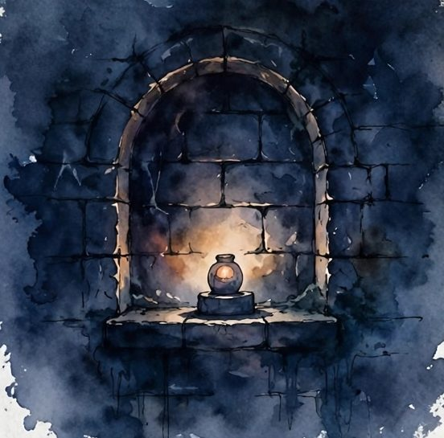
Один малый предмет стоит в самом центре ниши — и вокруг него, как вокруг тихого полюса, выстраивается вся глубина стены.
Ниша узнаётся по размеру: она строится не метрами, а предметом. Поставьте в неё чашку — и глубина станет глубиной чашки; поставьте книгу — и стена отступит ровно на книгу; поставьте фотографию в простом обрамлении — и вся ниша станет местом одного лица и одного воспоминания.
Один предмет не терпит соседей-спорщиков. Он требует, чтобы свет падал на него одного, чтобы тень собиралась за ним одним, чтобы взгляд, войдя в нишу, не метался, а останавливался. В этой строгости нет скупости: напротив, единственному предмету достаётся всё внимание, какое стена способна дать.
Размер одного предмета — мера честности. Большое легко спрятать в большом, малое же видно целиком, со всеми следами рук и времени. Ниша учит не бояться этой видимости: пусть вещь будет одна, пусть она будет невелика — если она выбрана верно, её размера достаточно для целой стены.
11Ночь как строительный материал
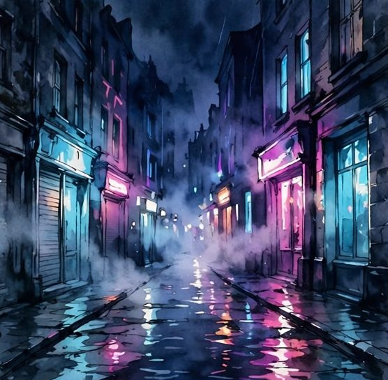
Ночная улица выстроена из камня и света пополам: где кончается кирпич, там начинается сияние, и наоборот.
Днём этот город строят из кирпича, стекла и хрома, а ночью к ним прибавляется ещё один материал — сама ночь. Она заполняет промежутки между зданиями, ложится в арки и подворотни, и то, что днём было пустым проходом, ночью становится плотным, глубоким и почти осязаемым объёмом.
Ниша — изделие ночного строительства. Её стены начаты днём, но завершены темнотой: именно ночь даёт ей глубину, отнимая у улицы лишние подробности, именно ночь кладёт последнюю, самую мягкую отделку — полутьму, в которой предметы звучат тише и точнее, как голоса вполтона.
Утром ночной материал растворится, и ниша снова станет простым углублением в стене. Но тот, кто видел её ночью, уже знает её тайные размеры. Так и живут в этом городе: днём измеряют шагами и планами, а ночью — светом, тенью и теплом одного угла, который нельзя построить, а можно только дождаться.
12Дверь первой комнаты
Всякая долгая дорога в этом городе начинается одинаково: с двери, которую открывают не на улицу, а внутрь. За аркой, в глубине первой ниши, есть такая дверь — невысокая, без надписей, с тёплой ручкой, нагретой многими ладонями. Она не запирается, потому что за ней начинается не владение, а согласие.
Первая комната невелика, и это её достоинство. В ней помещается ровно то, с чего начинается своё место: стул, малый свет, одна вещь на полке и тишина, которую ещё предстоит изучить. Кто входит сюда впервые, обычно говорит шёпотом — не из страха, а из невольного уважения к мере.
Отсюда расходятся все остальные комнаты этой долгой страницы, как от первого сказанного слова расходится фраза. Запомним же дверь: её порог, её тёплую ручку, полосу света под ней в дождливую ночь. Дальше будет тишина, будет выбор главного, будет своя мера — но начало уже положено, и начало это — дверь.
13Тишина, которую носят с собой
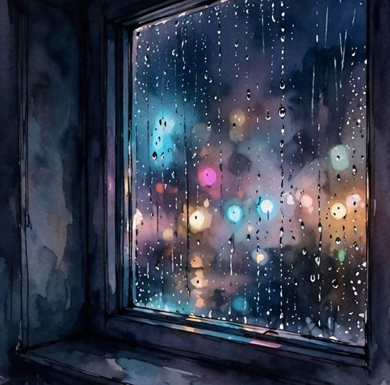
Тихий угол устроен внутри, у самого окна, за которым дождь идёт по ночному городу, не тревожа никого.
Есть люди, которые носят тишину с собой, как носят тёплый шарф или привычную книгу: в шумном вагоне, в гулком вестибюле, в очереди под яркими экранами их угол остаётся при них. Стоит им сесть и опустить плечи — и вокруг, на ширину одного дыхания, становится тише.
Эта тишина не даётся от рождения, она собирается по частям. Из вечера, проведённого в нише под дождём. Из комнаты, где говорили вполголоса. Из привычки не отвечать сразу, а сначала услышать вопрос до конца. Медленно, как стена обрастает плющом, человек обрастает своей тишиной — и начинает делиться ею без слов.
Ниша бережёт таких носителей. Она узнаёт их с порога: они не заполняют глубину суетой, не проверяют, как звучит здесь голос, а просто занимают своё место и молчат благодарно. Город шумит вокруг во всё своё сияние, а в нише, на двоих — место и человека, — держится тишина, которую можно унести дальше.
14Акустика тёплого угла
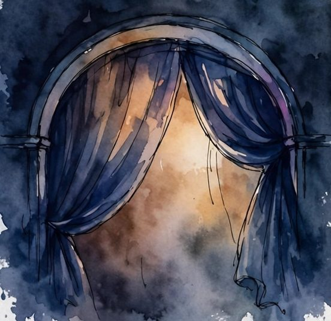
Арка и мягкие драпировки собирают звук бережно, как раковина собирает шум далёкого моря, и возвращают его тихим.
У тёплого угла своя акустика, и строится она не расчётом, а добротой материалов. Ткань приглушает резкое, дерево смягчает звонкое, штукатурка держит голос близко, не отпуская его гулять по камню. Здесь слово не нужно повышать: оно доходит целиком уже потому, что сказано рядом.
Проверьте это малым опытом: поставьте в нише чайник, послушайте, как он закипает. В гулкой комнате его шум был бы помехой, здесь он — почти собеседник: ровный, нарастающий, честный звук, за которым следует тишина пара и первая чашка. Акустика угла превращает бытовое в значительное, не добавляя ничего лишнего.
Поэтому в нише так легко молчать вдвоём и так трудно кричать. Угол словно заранее согласен только на тихие регистры жизни: шёпот, полуголос, смех сквозь улыбку, страницу, перевёрнутую медленно. Кто привык к этой акустике, тот и на шумной улице начинает говорить тише — и его, как ни странно, слышат лучше.
15Шум остаётся за аркой
Шум города честен: он не обещает умолкнуть. Машины, голоса, сигналы, музыка из открытых дверей — всё это будет продолжаться и после полуночи, и после рассвета. Ниша не требует от города невозможного: она просто ставит арку между шумом и человеком — и шум, не исчезнув, перестаёт быть главным.
У арки есть замечательное свойство: она пропускает звук избирательно. Гул доходит, но теряет резкость; шаги слышны, но уже не торопят; далёкий сигнал звучит почти как часть дождя. Словно стена, пропуская шум через камень и тень, успевает снять с него тревогу и оставить только известие: город жив, город рядом.
Остаться по эту сторону арки — не значит спрятаться. Это значит выбрать, в каком звуке жить ближайший час. Мир не становится тише от нашего выбора, но человек становится тише внутри него, а это, если вдуматься, единственная тишина, которая никогда не зависит от чужой воли и чужого расписания.
Канцелярия „Наша Ниша"
Одна канцелярия принимает всю переписку этого дома — вопросы, поправки, рассказы о ваших собственных местах. Письма читаются в порядке поступления. Канцелярия не даёт строительных и карьерных консультаций; она держит дом.
16Угол, где звук гаснет прежде слов
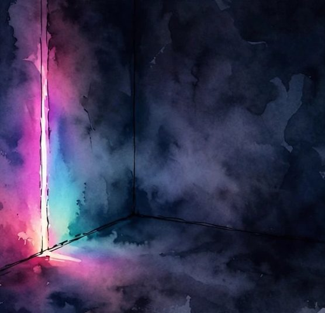
В дальнем углу свечение улицы гаснет в мягкую тень — и звук, войдя сюда, гаснет вместе со светом, прежде всякого слова.
Есть угол, где звук гаснет прежде слов. Сказанное здесь не успевает стать громким: оно рождается уже приглушённым, как свет малой лампы рождается тёплым. Сюда приходят не за разговором, а за той минутой, которая предшествует разговору, — минутой, когда ещё можно передумать, смягчиться, найти другое слово.
Архитектура этого угла проста: низкая арка, глухая стена за спиной, ткань сбоку и тень сверху. Но простота обманчива — такой угол складывается годами, как складывается характер: из отказов лишнему, из привычки к малому свету, из уважения к паузе. Разрушить его легко одним резким звуком; собрать заново — долго и бережно.
Слова, всё же произнесённые здесь, отличаются особой точностью. Когда голос не может опереться на громкость, он опирается на смысл. Поэтому в этом углу говорят мало и по делу, а молчат много и с пользой — и уходят отсюда с ощущением, что главное было не сказано, а услышано.
17Тишина не пуста: она населена
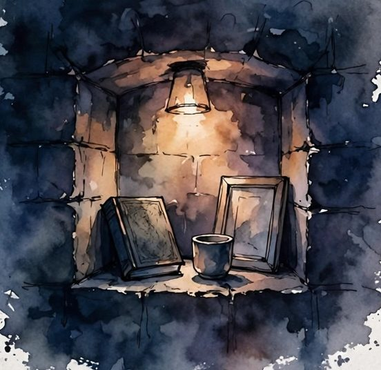
Ниша хранит несколько вещей, бережно поставленных рядом, — и тишина между ними населена, как населена пауза между нотами.
Кто впервые входит в нишу, тот говорит: как тихо. Кто входит в десятый раз, тот говорит иначе: как полно. Тишина здешняя не пуста — она населена малыми звуками и малыми присутствиями: дыханием стены после дождя, редкой каплей с карниза, теплом лампы, вещами, стоящими на своих местах и словно прислушивающимися друг к другу.
Населённость тишины измеряется вниманием. Пустая комната и населённая ниша могут молчать одинаково громко — разница в том, что во второй каждый звук имеет адрес: вот шорох ткани, вот лёгкий звон чашки о блюдце, вот страница, вот дождь, вот город за аркой, приглушённый, но неустанный.
Научиться жить в такой тишине — значит перестать заполнять её чем попало. Не всякая пауза требует слова, не всякий вечер — известий и голосов. Иногда довольно того, что место населено вещами, которые вы любите, и памятью о тех, кто сидел здесь до вас. Тишина всё это хранит и ничего из этого не теряет.
18Слушать, как гудит город
Сядьте в нише спиной к стене и послушайте город, не глядя на него. Гул его окажется сложнее и добрее, чем казалось на ходу: в нём различимы и ровный шум дождя, и редкие шаги, и далёкая музыка, и дыхание неона, и тот низкий, почти неслышный тон, которым звучит ночью большое скопление человеческих жизней.
Слушать — занятие медленное, и город вознаграждает за медленность. Через десять минут гул начнёт распадаться на голоса, через полчаса голоса сложатся в рассказ: вот кто-то возвращается домой, вот кто-то только выходит в ночь, вот окно открылось и закрылось, вот улица на мгновение опустела — и снова наполнилась, как наполняется водой след на мокром камне.
Ниша — лучшая ложа для этого слушания. Она отделяет ровно настолько, чтобы звук стал картиной, а не давлением. Уходя отсюда, уносишь с собой не тишину даже, а настроенный слух: способность и в дневной суете различать за общим гулом отдельные, человеческие, берегущие друг друга голоса.
19Пауза между сигналами
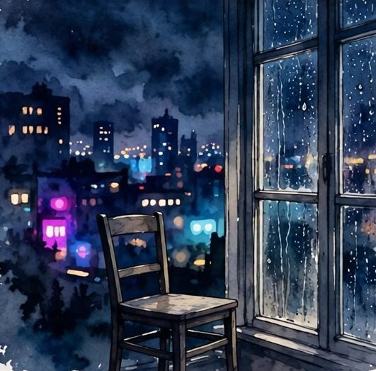
Пустой стул стоит у окна, а за мокрым стеклом город подаёт свои сигналы — и молча ждёт ответа, которого не требует.
Город общается сигналами: вспыхнул, мигнул, позвал, предупредил. Между сигналами есть паузы — короткие, почти незаметные, но именно в них город отдыхает и именно в них человек успевает подумать. Ниша, если присмотреться, и есть такая пауза, только увеличенная до размеров места.
В паузе между сигналами не происходит ничего — и происходит всё. Успевает осесть взволнованная мысль, успевает остыть резкое слово, успевает решиться то, что не решалось в сплошном потоке известий. Кто пренебрегает паузами, тот слышит только сигналы и постепенно становится одним из них: вспыхивает, мигает, гаснет.
Берегите паузу, как берегут малый свет. Поставьте стул у окна, сядьте и дайте городу сигналить мимо: дождь по стеклу, отсветы на потолке, далёкий гул — всё это теперь фон, а не приказ. Следующий сигнал, когда он придёт, найдёт вас отдохнувшим — и, возможно, впервые будет услышан по-настоящему, от первого звука до последнего.
20Молчание вещей при свете экранов
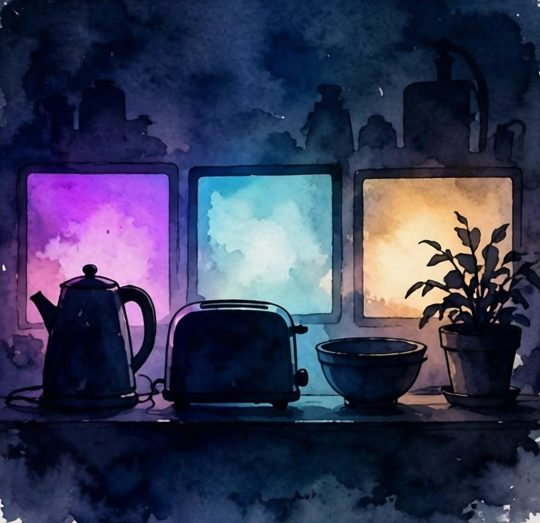
Вещи стоят тёмными силуэтами против света экранов — и молчат так достойно, что свет рядом с ними кажется суетливым.
Вечером, когда экраны вспыхивают по всем комнатам города, вещи в нише уходят в тень и молчат. Чашка, книга, лампа, фотография — все они темнеют силуэтами на фоне чужого, холодного свечения, и в их молчании нет ни обиды, ни соревнования: вещи умеют ждать, как умеют ждать только очень уверенные в себе существа.
Экранный свет тороплив и переменчив: он обещает всё сразу и ничего не держит дольше мгновения. Вещи при этом свете выглядят почти старомодно — и именно поэтому надёжно. Чашка не обновится за ночь, книга не сменит свой текст, фотография не подмигнёт. Их неизменность — форма верности, которой светящиеся поверхности только учатся.
Посидите в нише, пока экраны не погаснут сами. В наступившей полутьме вещи постепенно вернут себе очертания и тепло, и вы заметите простую вещь: молчание их было не отсутствием жизни, а её сбережённой формой. Всё главное в этом углу происходило без света — и потому не погаснет вместе с ним никогда.
21Тишина глубокой ночи
Глубокой ночью город наконец становится честен с самим собой. Умолкают дневные голоса, редеют шаги, и даже неон, утомившись сиять, светит ровнее и тише. Тишина этого часа не похожа на вечернюю: та была передышкой, эта — итогом, как последняя страница, после которой книгу закрывают медленно и бережно.
В такую ночь ниша раскрывается полностью. Днём она — углубление, вечером — угол, а глубокой ночью она становится тем, чем была задумана: местом, где человек и город наконец молчат одновременно, и молчание это не давит, а держит, как держит вода того, кто перестал бороться с течением и доверился ему.
Не всякому удаётся дождаться этого часа, и не всякому он нужен. Но кто однажды просидел в нише глубокую ночь до первого серого света за мокрыми крышами, тот знает: есть тишина, ради которой стоит не спать. Она не даёт ответов — она возвращает вопросы их законному владельцу и оставляет его с ними наедине, в мире и согласии.
22Не всякая тишина — покой
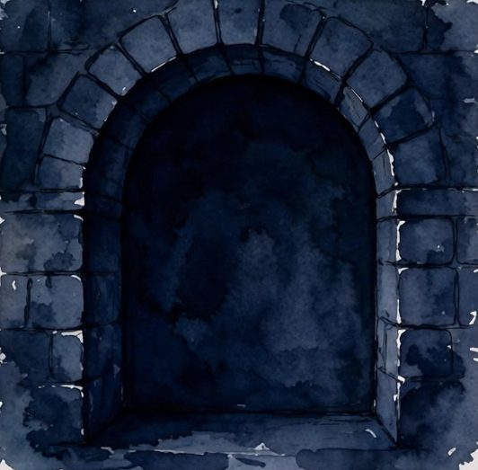
Тёмная ниша стоит без единого огонька, и её темнота не обещает покоя — она только честно молчит рядом.
Не всякая тишина — покой. Есть тишина ожидания, в которой слышен каждый шорох за стеной; есть тишина после тяжёлого разговора, где слова уже сказаны, а эхо всё ещё ходит по комнате; есть тишина нерешённого, и она звучит громче всякого шума, потому что в ней человек слышит самого себя без прикрас.
Ниша не обманывает на этот счёт. Она не обещает, что внутри неё сразу станет легко: иногда именно здесь, в отрезанности от городского гула, тревога впервые получает голос и требует, чтобы её выслушали до конца. Пройти через такую тишину — труд, и труд этот нельзя ни ускорить чужим советом, ни отменить ярким светом и громкой музыкой.
Но и эта тишина — слуга, а не враг. Она отделяет важное от наносного точнее любого дневного разбирательства: к утру в ней остаётся одно-два настоящих беспокойства и целая груда вчерашних, оказавшихся просто усталостью. За одно это нишу стоит беречь — она не утешает, она проясняет, а прояснение и есть начало покоя.
23Тишина, которую берегут вдвоём
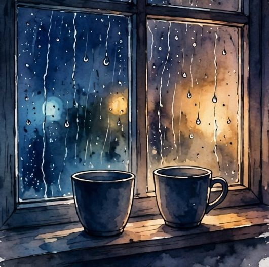
Две чашки стоят на подоконнике рядом, за окном идёт дождь, и тишина между ними — общая, как общий стол и общий вечер.
Есть тишина, которую невозможно беречь в одиночку: она рождается только между двумя людьми, сидящими рядом, и умирает, стоит одному из них заговорить не о том или замолчать не так. Её не создашь приказом и не купишь уединением — она складывается из доверия, как стена складывается из камней: медленно, с подбором каждого по месту.
Две чашки на подоконнике — её верный знак. Пока пар поднимается над ними, разговор ещё возможен; когда чашки остыли, а двое всё сидят и смотрят, как дождь идёт по ночному городу, — разговор уже не нужен. Всё главное сказано раньше или будет сказано позже, а сейчас главное происходит без слов и при полном согласии обеих сторон.
Беречь такую тишину — значит беречь и второго её хранителя. Не проверять её лишними вопросами, не заполнять её суетой, возвращаться к ней, как возвращаются в нишу после долгой улицы: с благодарностью и без требований. Город шумит за окном во всё своё сияние — а здесь, на подоконнике, на двоих, держится самое хрупкое и самое прочное, что бывает между людьми.
24Тишина — первая мебель
Прежде чем в нише появятся вещи, в ней появляется тишина — и потому её можно назвать первой мебелью этого места. Кресло можно принести позже, лампу — ещё позже, но если тишина не встала в глубину первой, никакая обстановка не сделает угол своим: будет только мебель, поставленная в проходе чужой жизни.
Первая мебель требует ухода, как и всякая другая. Тишину протирают от спешки, выносят из неё сор дневных пересудов, чинят её малые трещины — извинились, договорили, отпустили. Запущенная тишина, как запущенная комната, постепенно заполняется хламом несделанного, и тогда уже никакой порядок вещей не возвращает углу его лёгкости.
Когда же первая мебель на месте, остальное приходит почти само. Стул встаёт туда, где тишине удобно; лампа зажигается там, где она её не спугнёт; вещь ложится на полку так, словно всегда там лежала. Порядок в нише начинается не с рук, а со слуха — с умения сначала услышать тишину и уже потом расставлять вокруг неё свою жизнь.
25Одно место — одна вещь
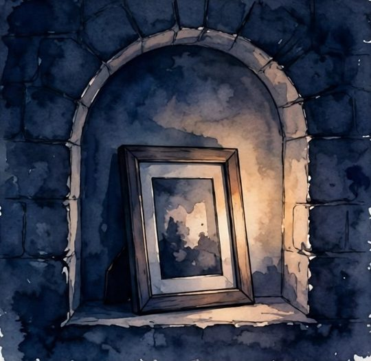
Одна фотография стоит в нише одна, без соседей и подписей, — и занимает всё место целиком, как занимает его память.
Одно место — одна вещь: таков первый и самый строгий закон ниши. Не потому, что двум вещам здесь тесно, а потому, что внимание человека не делится без потерь. Поставленная в одиночестве, вещь получает всю глубину стены, весь свет лампы и весь взгляд входящего — и впервые становится видна целиком.
Фотография в нише не нуждается в подписи. Кто поставил её сюда, тот и так знает, кто смотрит с неё сквозь годы и непогоду; а гостю знать не положено — довольно того, что он чувствует: место занято главным. В городах, где всё выставлено и всё объяснено, такая необъяснённость выглядит почти роскошью и уж точно — достоинством.
Закон одной вещи строг, но не жесток. Он не запрещает перемен: он требует только, чтобы всякая перемена была решением, а не случайностью. Убрать одно, поставить другое, помолчать над пустой полкой — всё это позволено. Не позволено одно: превращать нишу в склад, где главное тонет среди второстепенного и наконец перестаёт находиться.
26Как выбрать главное
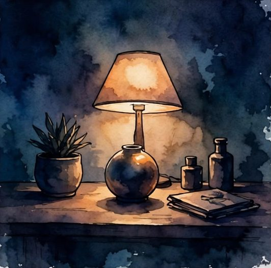
Несколько вещей лежат на столе при малом свете, и одна из них, выбранная, уже поставлена в центр — остальные ждут и не спорят.
Выбрать главное труднее, чем кажется, пока выбор не встал перед вами на столе. Вот несколько вещей, и каждая дорога: эта — памятью, та — работой, третья — просто красотой своей формы. Рука ходит над ними и не решается, потому что выбрать одну — значит остальным, по крайней мере на время, отказать в первом месте.
Ниша учит выбирать медленно и без самобичевания. Главное — не обязательно самое дорогое сердцу вообще; главное — то, без чего это место, этот сезон, этот вечер перестают быть собой. Иногда это фотография, иногда — инструмент завтрашней работы, иногда — чашка, из которой начинается утро. Мера здесь одна: что держит остальное, то и главное.
Выбранную вещь ставят в центр не как победителя, а как несущую. Остальные не изгоняются — они отступают на шаг, образуя вокруг главного тихий круг поддержки. Так и в жизни устроено всё прочное: одно — в центре, прочее — рядом и по мере сил, и порядок этот не унижает ни краевых, ни центрального, а даёт каждому точное место.
27Фотография, которую не заменит никакая другая
Есть фотография, которую не заменит никакая другая, хотя бы на ней не было ничего особенного: угол двора, окно с занавеской, человек, успевший только полуобернуться. Чужие глаза скользнут по ней равнодушно — и будут правы по-своему; для хозяина же в этом снимке уместился целый отрезок жизни, со всеми его запахами, голосами и непогодами.
Незаменимость не нуждается в доказательствах. Она не спорит с другими фотографиями и не требует первого места во всяком доме — только в этой нише, только на этой полке. Здесь снимок стоит не как изображение, а как присутствие: пока он здесь, тот, кто на нём, не ушёл окончательно, а словно присел рядом, в тёплый угол, и молчит знакомым молчанием.
Беречь такую фотографию — значит беречь не бумагу и не плёнку, а связь. Протирать стекло, поправлять наклон, возвращать на место после уборки — малые обряды, в которых память остаётся не прошлым, а настоящим временем. Ниша для этого и существует: чтобы у незаменимого было где стоять и не теряться среди заменимого.
28Носитель, на котором уместилась жизнь
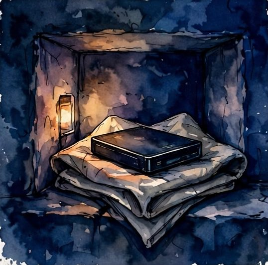
Малый тёмный носитель лежит на ткани в глубине алькова — невзрачный, тихий и вмещающий в себя целую жизнь.
Странно устроена нынешняя память: целая жизнь — письма, голоса, лица, дороги — умещается теперь на носителе, который теряется в ладони. Он лежит в нише на мягкой ткани, тёмный, невзрачный, молчаливый, и ничем не выдаёт своего содержимого, как не выдаёт его закрытая книга или запертый ящик стола ушедшего человека.
В этой несоразмерности есть и тревога, и утешение. Тревога — потому что хрупко то, что не занимает места: одно неверное движение, и годы рассыплются беззвучно. Утешение — потому что нише такой хранитель соразмерен: ей и нужен был предмет малый, тихий, не требующий ни витрины, ни объяснений, лежащий в тёплой глубине, как лежит семя в земле до своего срока.
Относитесь к нему по закону ниши: у него есть своё единственное место, свой свет и своя тишина. Пусть лежит. Время от времени его берут в руки, проверяют, жив ли, — и кладут обратно с тем особым чувством, когда держишь не вещь, а доверенную тебе жизнь, и знаешь, что доверие это надо оправдывать каждый день, а не по праздникам.
29Чашка, из которой пьют только здесь
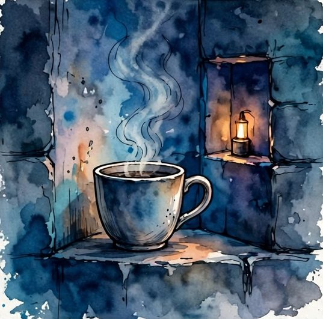
Одна чашка стоит под малым светом, лёгкий пар поднимается над ней, и свет диода дрожит в её глазури, как в спокойной воде.
У каждой ниши есть чашка, из которой пьют только здесь. В другом месте она была бы просто посудой — чуть щербатой, чуть тяжёлой для руки; здесь же, на своей полке, под своим светом, она становится мерой вечера: налили — значит, день закончен, сели — значит, спешить больше некуда, допили — значит, пора дать городу шуметь без нас до утра.
Ритуал её прост и потому не надоедает годами. Та же вода, тот же чайник, по-хромированному боку которого скользят отсветы улицы, та же последовательность малых движений. В мире, где всё обновляется быстрее, чем успеваешь привыкнуть, эта неизменность — не отсталость, а якорь: пока чашка на месте, место остаётся собой, а человек — хозяином своего вечера.
Гостю из неё не наливают не из скупости: для гостя есть другая чашка, своя и тоже любимая. Эта же хранит вкус уединения, и делиться им — всё равно что делиться дневником. Пусть стоит на своей полке, тёплая, щербата, незаменима — маленькое доказательство того, что у человека есть место, где его привычки не нужно ни объяснять, ни оправдывать.
30Письмо, которое не отправили
В глубине ниши, под книгой или за фотографией, у многих лежит письмо, которое так и не было отправлено. Оно было написано в свой час — горячо, честно, до конца; потом час прошёл, адрес изменился или изменился сам писавший, и письмо осталось дома, превратившись из послания в свидетельство: вот что было сказано, хотя и не было услышано.
Неотправленное не значит несбывшееся. Иногда письмо совершает свою работу в момент написания: выговаривает то, что душило, расставляет имена по местам, возвращает автору его собственный голос. Отправка после этого была бы уже вторым, лишним действием — как повторный удар в колокол, который и так прозвучал на всю округу и разбудил кого следовало.
Ниша хранит такие письма без стыда и без торжественности. Они лежат рядом с главным, потому что сами — главное: доказательство, что человек в трудный час не промолчал, а сказал, хотя бы и самому себе. Пусть лежат. Некоторые слова должны прозвучать ровно один раз и остаться в тёплой глубине, как остаётся в стене тепло давно истлевшей печи.
Канцелярия „Наша Ниша"
Одна канцелярия принимает всю переписку этого дома — вопросы, поправки, рассказы о ваших собственных местах. Письма читаются в порядке поступления. Канцелярия не даёт строительных и карьерных консультаций; она держит дом.
31Главное — не значит дорогое
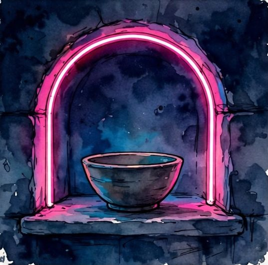
Простая глиняная миска стоит в освещённой нише — ни клейма, ни позолоты, а место держится ею, как держится дом хлебом.
Главное редко совпадает с дорогим, хотя мир ярких витрин настойчиво уверяет в обратном. В нише этот обман рассеивается быстро: здесь годами стоит простая глиняная миска, купленная за бесценок на утреннем рынке, — и именно она, а не парадный фарфор из шкафа, держит память о доме, о руках и о вечерах, когда всё ещё было впереди.
Цена вещи измеряется рынком, значение — биографией. Миска дешева для всякого, кто не ел из неё в трудную зиму; фотография ничего не стоит для того, чьих лиц на ней нет. Ниша существует, чтобы эти две меры не смешивались: здесь платят вниманием, а не деньгами, и курс этой платы не падает никогда.
Поэтому не стыдитесь дешевизны главного. Стыдиться стоит обратного — когда место в глубине стены занимает дорогое и чужое, поставленное для чужих глаз. Главное, выбранное по значению, а не по цене, не нуждается в защите: оно стоит тихо и прочно, и всякий входящий чувствует — здесь не выставка, здесь жизнь.
32Ниша не терпит толпы
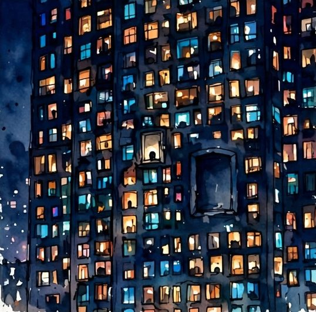
Тысячи окон башни светятся толпой огней, а среди них одна-единственная ниша ясна и тиха — и взгляд находит именно её.
Ниша не терпит толпы — не из горделивости, а по самой своей природе. Толпа требует широты, движения и голоса; ниша даёт глубину, остановку и полуголос. Поставьте в неё три вещи — и они начнут спорить; приведите пять человек — и она станет проходом. Её мера — один предмет и один-два человека, но мера эта не бедность, а точность.
Зато в своём малом кругу ниша безотказна. Одному она даёт уединение без одиночества, двоим — близость без суеты, вещи — место без соперников. Толпа за аркой может шуметь сколько угодно: город велик, в нём хватит места и площадям, и праздникам. Ниша не отнимает у толпы ничего — она сохраняет другой способ быть одному и быть вместе.
Берегите эту меру, когда захочется расширить и пригласить ещё. Всякое место живо, пока помнит свой размер. Ниша, сохранившая меру, переживёт многие просторные начинания, потому что держится сама — глубиной стены, теплом угла и вашим возвращением каждый вечер, в дождь и в ясную ночь.
33Когда главное меняется
Приходит время, когда главное меняется. Фотография, стоявшая в центре годами, однажды кажется вдруг вчерашней; на её место просится другая вещь — орудие новой работы, письмо нового человека, предмет, привезённый из дороги, изменившей всё. Ниша принимает перемену без драмы: она строилась не под одну вещь, а под закон выбора, а закон переживает любые свои применения.
Менять главное — не значит предавать прежнее. Ушедшая из центра вещь не выбрасывается: она отступает в тихий круг поддерживающих — на соседнюю полку, в ящик, в память, которая уже не требует ежедневного взгляда. Порядок держится не неизменностью состава, а честностью каждой перемены и благодарностью к тому, что уходит.
Не торопите эту смену и не задерживайте её насильно. Главное меняется тогда, когда изменился сам человек, а человек узнаёт о своей перемене позже всех — по руке, которая впервые тянется не к привычному предмету. Доверьтесь руке: поставьте новое в центр, помолчите рядом — и место примет верное решение тихо и окончательно.
34Освободить место — труд
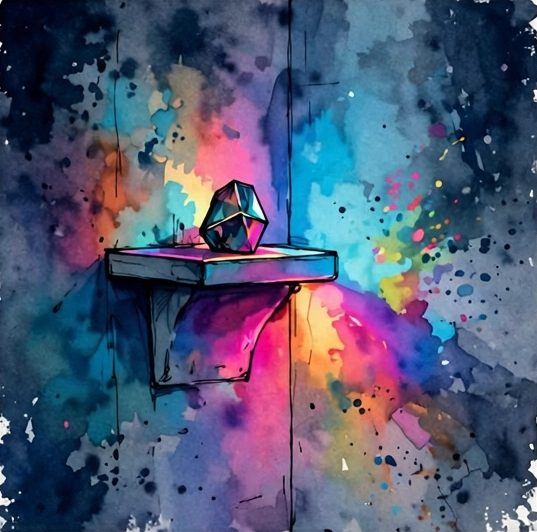
Предмет только что убран с полки, и на штукатурке остался его цветной отсвет — след присутствия, которое ещё не успело остыть.
Освободить место труднее, чем занять его. Занять — дело одного вечера: принёс, поставил, зажёг свет. Освободить — дело долгое: каждую вещь нужно взять в руки, вспомнить, взвесить и решить её участь, а решения эти, сложенные вместе, составляют почти пересказ собственной жизни, со всеми её удачами, отложенными планами и тихими поражениями.
Поэтому не ругайте себя за медленность освобождения. Место в нише освобождается не уборкой, а согласием: согласием признать, что этот отрезок пути пройден, эта вещь своё отслужила, а эта — честно говоря, никогда и не была вашей. Такое согласие не приходит по расписанию; оно созревает, как созревает решение написать то самое письмо, которое потом, возможно, так и не будет отправлено.
Зато освобождённое место — самая чистая радость ниши. Пустая полка в тёплом свете выглядит не потерей, а дыханием: стена словно выпрямляется, свет ложится шире, и в образовавшейся пустоте уже угадывается будущее главное, ещё без имени и формы. Ради этой минуты и стоит трудиться — не ради порядка, а ради возможности начала, которое всегда начинается с пустоты.
35Предмет и его отсвет
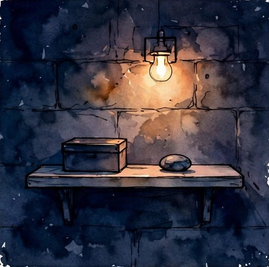
Несколько вещей стоят на полке в строгом минимуме — каждая на своём месте, и ни одной лишней между ними.
Всякий предмет, поставленный в нишу, начинает светиться отражённым светом — не своим, а места. Чашка ловит отсвет лампы, фотография — отсвет окна, глиняная миска — тёплый отсвет стены после дождя. Предмет и его отсвет неразлучны, как человек и его репутация: второе всегда чуть шире, чуть мягче и живёт чуть дольше первого.
Отсвет — честный рассказчик. По нему видно, как долго вещь стоит на месте: штукатурка за ней светлее, тень вокруг — глубже, свет ложится вокруг неё привычно, как вода обтекает давно лежащий камень. Переставьте предмет — и отсвет ещё несколько дней будет хранить его прежние очертания, словно стена не сразу верит переменам и по-своему, по-каменному, скучает.
Относитесь бережно и к предмету, и к его отсвету. Не стирайте след присутствия в тот же час, как вещь ушла; дайте стене постепенно привыкнуть к пустоте, а себе — к новому порядку. В нише, где помнят отсветы, ничто не исчезает бесследно: всё главное, уходя, оставляет после себя светлую метку — и в этом, если вдуматься, заключено тихое обещание, которое место даёт человеку без слов.
36Порядок без строгости
Порядок в нише не похож на парадный строй: вещи стоят не по росту и не по алфавиту, а по близости к жизни хозяина. Чашка — ближе к руке, книга — ближе к свету, фотография — ближе к сердцу, то есть в самой глубине. Со стороны такой порядок может показаться случайным; на деле он точен, как раскладка орудий у мастера, который найдёт нужное с закрытыми глазами.
Строгость этому порядку ни к чему. Строгость требует, чтобы порядок поддерживали ради него самого; нише же он нужен только как условие тишины. Если вещь сдвинулась и тишина не нарушилась — порядок цел. Если всё стоит по линейке, а в углу тревожно, — порядка нет, есть только его изображение, годное для чужих глаз.
Поддерживать такой порядок легко: он не карает за отступления, а подсказывает. Рука сама возвращает чашку на её круг, взгляд сам замечает лишний предмет, случайно попавший в глубину. Так порядок без строгости становится формой заботы — о месте, о вещах и о человеке, который возвращается сюда каждый вечер.
37Второе значение слова
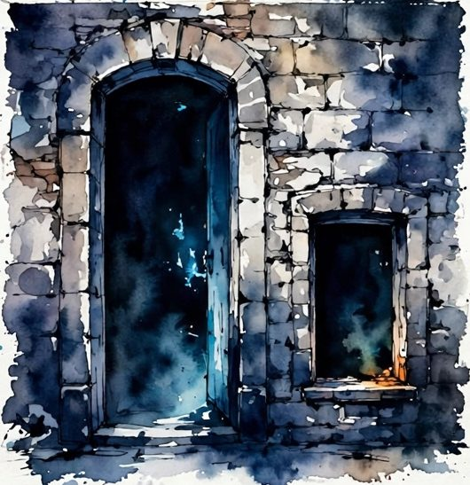
Два дверных проёма стоят рядом — один высокий и общий, другой малый и точный, и каждый ведёт в свою меру жизни.
У слова ниша есть второе значение, известное всякому, кто искал своё дело и своё место: ниша — это занятие и поприще, соразмерное одному человеку, его силам, его вкусу, его мере. Как углубление в стене строится под один предмет, так дело жизни строится под одного исполнителя — и горе размеру, взятому с чужого плеча.
Первое значение учит второму всему необходимому. Глубина — умению углубляться, а не растекаться. Единственная вещь в центре — умению выбирать главное и в работе. Малый свет — довольству малым признанием, лишь бы дело было своим. Кто устроил нишу в стене ночного города, тот наполовину устроил и нишу в жизни: руки помнят меру, глаз помнит свет.
Дальше страница пойдёт именно об этом — о своём месте, о работе по собственной мерке, о дверях не по росту и о комнатах, построенных для неведомого среднего человека. Всё будет сказано тем же языком стен и углов, потому что язык этот честен: он не умеет льстить и обещать лишнего, а умеет только показывать меру и приглашать каждого найти свою.
38Работа, сшитая по собственной мерке
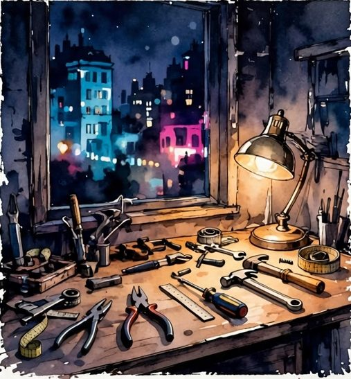
Рабочий угол ночной комнаты: инструменты разложены в порядке, тёплая лампа стоит близко, и работа здесь сшита точно по рукам хозяина.
Есть работа, сшитая по собственной мерке, как шьют платье у хорошего портного: с примерками, с уважением к осанке заказчика. Она не жмёт в плечах чужими сроками и не волочится по земле чужими притязаниями; она сидит точно, позволяет дышать и не напоминает о себе каждый час, как не напоминает хорошее платье, сшитое на вас одного.
Такая работа редко бывает громкой. Её мастерская — тот же тёплый угол: стол у стены, орудия в порядке, лампа близко, город за окном. Внутри неё человек не исполняет роль, а делает дело руками, которые это дело любят и знают. Со стороны результат может показаться малым; изнутри он огромен, потому что в нём нет ни одного чужого стежка.
Сшить себе такую работу — долго, и ниша терпеливо учит этому шитью. Сначала снять мерку, честно и без прибавок. Потом выбрать материал по средствам и по сердцу. Потом шить медленно, примеряя на живого себя, а не на манекен успеха. Кто дошьёт, тот получит не должность, а дело, в котором помещается целиком, как главное — в своей нише.
39Стандартные комнаты
Стандартные комнаты строят для человека, которого никто никогда не видел. У него средний рост, средние плечи, средняя усталость к вечеру и средняя радость по утрам; ему не бывает ни слишком тихо, ни слишком громко. Под этого несуществующего жильца рассчитаны высота полок и широта проходов — и потому настоящим людям в таких комнатах вечно что-нибудь жмёт, трёт или оказывается недосягаемым.
Винить строителей не стоит: нельзя сшить платье на каждого, не зная мерки, вот и шьют на среднего. Беда начинается позже — когда человек, годами живя в стандартной комнате, начинает считать изъяном себя, а не комнату: это у меня плечи не те, это мой рост виноват. А вокруг, если прислушаться, многим неуютно совершенно так же, только молча.
Ниша — ответ на эту тихую несправедливость планировки. Она не требует перестраивать весь дом: довольно одной стены, отступившей на полшага ровно там, где это нужно вам. Стандартная комната пусть остаётся для стандартных дел; но у каждого должно быть хоть одно углубление, сделанное по его собственной, единственной мерке.
40Двери не по росту
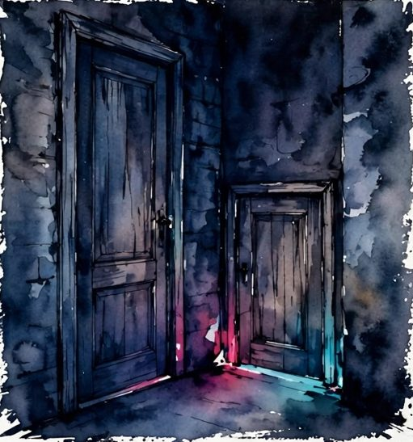
Высокая узкая дверь и рядом — малая, низкая: две меры, из которых каждый волен выбрать свою.
Двери тоже бывают не по росту. В одни приходится наклоняться всю жизнь, и человек постепенно привыкает входить в собственные дни с опущенной головой; другие так высоки и широки, что в них теряешься, как голос в пустом зале, и начинаешь говорить громче, чем думаешь, лишь бы доказать своё право.
Не по росту — не значит плохо построено. Дверь могла быть рассчитана честно, но на другого: на того, кто выше и шире в плечах своих притязаний. Ошибка — не в двери и не в человеке, а в их встрече, которую оба приняли за судьбу. Сколько жизней проходит в пригибании под низкой притолокой только потому, что искать свою дверь казалось поздно и неприлично.
А между тем своя дверь существует — невысокая, точная, с тёплой ручкой, как та, с которой началась эта страница. Она открывается не в стандартную комнату, а в свою нишу, где свет, тишина и единственная вещь уже ждут хозяина. Уже одно знание, что ваша дверь где-то есть, меняет походку: голова поднимается, и шаг становится шагом человека, идущего к своему месту.
41Искать медленно, без срока
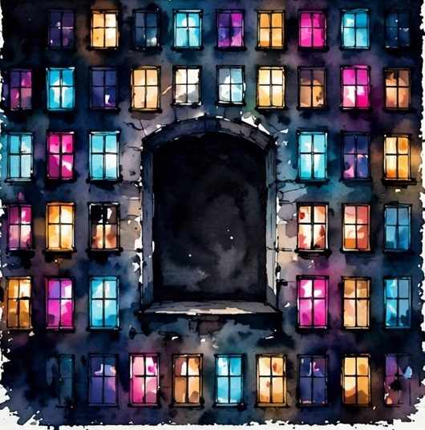
Тёмная ниша в стене ярких окон ждёт, не требуя, чтобы её заметили первой.
Своё место не ищут наспех. Спешка заставляет брать первое, что похоже на приют, и долго потом называть чужим именем то, что с самого начала было временным. Медленный поиск устроен иначе: человек идёт, смотрит, прислушивается к себе и не ставит сроку, после которого обязан отчитаться находкой.
За окнами ночного города сияют витрины, вывески, чужие окна — всё зовёт, всё обещает, всё торопит. Среди этого сияния своё место может оказаться самым тёмным: небольшой нишей в стене, мимо которой десятки раз проходили не замечая. Она не кричит о себе. Она ждёт того, кто идёт достаточно медленно, чтобы различить тишину за светом.
Без срока — не значит без внимания. Напротив, внимание здесь главное орудие: замечать, где дыхание становится ровнее, где плечи опускаются, где рука сама тянется поправить занавесь или поставить чашку. Поиск, лишённый назначенного срока, не растрачивает силы на тревогу. Он копит их, как копит тепло стена, нагретая за день, и отдаёт потом, в нужный вечер.
42Ниша находится, а не назначается
Нельзя назначить нишу приказом, как назначают должность или распределяют комнаты по списку. Можно указать на углубление в стене и велеть считать его своим, но от такого веления внутри ничего не отзовётся. Место становится своим не тогда, когда его выделили, а тогда, когда его узнали.
Узнавание приходит тихо. Человек вдруг замечает, что возвращается к одному и тому же углу, что именно здесь ему легче молчать, думать, беречь главное. Никакого торжественного мгновения при этом не бывает: просто однажды вечером становится ясно, что выбор уже сделан — не разумом, а привычкой сердца, которая честнее многих решений.
Поэтому найденная ниша не нуждается в оправданиях. Её не защищают доводами, не объясняют гостям, не сверяют с чужими представлениями о том, как должно выглядеть настоящее место. Она держится не доводами, а присутствием: тем ровным теплом, которое возникает, когда человек и угол наконец перестают искать друг друга и начинают жить рядом.
43Чужие мерки не подходят
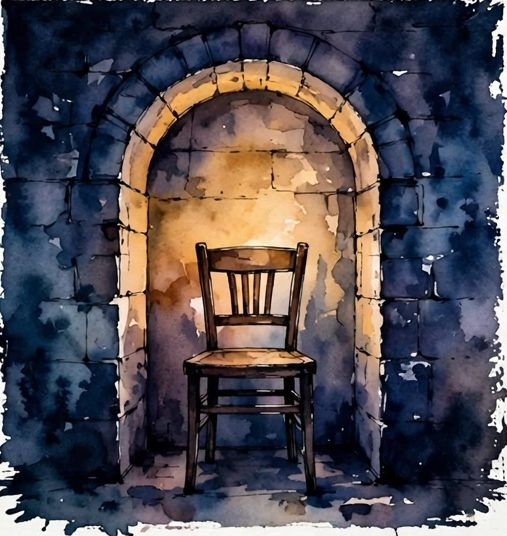
Стул, точно вошедший в альков, стоит так, словно углубление было вырезано именно для него.
Каждое место, как и каждый человек, имеет свою меру, и мера эта не снимается чужой линейкой. То, что для одного — теснота, для другого — точная посадка, где ничего не болтается и ничего не жмёт. Ошибка начинается там, где своё начинают измерять мерками, снятыми с чужих комнат и чужих судеб.
Стул, вошедший в альков точно, без зазора и без усилия, учит этому лучше рассуждений. Его не втискивали силой и не подпиливали под чужой размер. Он просто совпал с углублением, как слово совпадает с мыслью, когда оно наконец найдено. Такое совпадение не подделаешь: либо мера своя, либо стул будет скрипеть всю жизнь.
Отказаться от чужих мерок — не значит пренебречь чужим опытом. Чужие комнаты можно рассматривать с благодарностью, чужие советы — выслушивать внимательно. Но последняя примерка всегда делается дома, в своём углу, при своём свете. И если там тесно или пусто, никакое одобрение со стороны не сделает это место своим.
44Признаки своего места
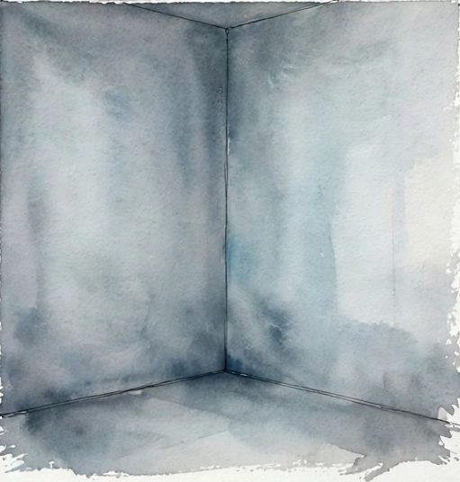
Пустой угол в сером утре ещё никого не ждёт, но свет ложится в него особенно мягко.
Своё место редко заявляет о себе громко, но у него есть признаки, и они повторяются. Первый — тишина особого свойства: не пустая, а согласная, в которой не хочется ни говорить громче, ни торопиться. Второй — рука, которая сама знает, куда поставить чашку, куда положить книгу, где поправить ткань.
Есть и третий признак, самый верный: время в своём месте идёт иначе. Оно не исчезает, как в суете, и не тянется, как в ожидании, — оно углубляется. Час, проведённый в своём углу, оставляет после себя больше, чем иной день, растраченный на беготню между чужими стенами, чужими разговорами и чужими окнами.
Наконец, своё место не хочется покидать насовсем, даже уходя из него надолго. О нём вспоминают без тоски, как вспоминают о друге, который умеет ждать. Серое утро за окном, пустой угол, мягкий свет на штукатурке — и тихая уверенность, что вечером сюда вернутся. По этой уверенности место и узнают окончательно.
45Когда место ещё не найдено
Бывают годы, когда своего места ещё нет. Человек живёт между квартирами, городами и чужими представлениями о себе, ночует, где придётся, и каждое утро собирает себя заново. Это не беда и не приговор, хотя в такие годы легко решить, что своего угла в мире для тебя просто не предусмотрено.
В такую пору важно не подделывать находку. Временная комната, названная вечной, мешает искать дальше; случайный угол, украшенный из последних сил, быстро выдаёт свою случайность. Честнее держать свои немногие вещи в порядке странника: чемодан у стены, сложенное одеяло, одна любимая вещь — и открытое внимание к стенам, мимо которых идёшь.
Не найденное ещё место уже работает издали, как работает ненаписанное письмо: оно собирает человека. Всё, что он бережёт в годы поисков — привычку к тишине, меру вещей, память о тепле, — потом войдёт в найденный угол и станет его устройством. Ожидание, прожитое без озлобления, не пустое время. Это медленная кладка стены, в которой однажды откроется ниша.
Канцелярия „Наша Ниша"
Одна канцелярия принимает всю переписку этого дома — вопросы, поправки, рассказы о ваших собственных местах. Письма читаются в порядке поступления. Канцелярия не даёт строительных и карьерных консультаций; она держит дом.
46Маленькое призвание
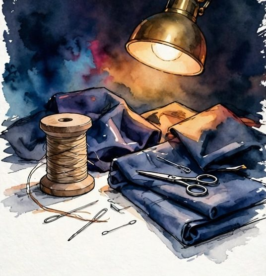
Катушка, ткань и мелкая работа под лампой — всё невелико, и всё на своём месте.
Призвание не обязано быть громким. Рядом с большими судьбами, о которых пишут книги, существуют маленькие призвания, почти никому не заметные: шить, чинить, выращивать одно растение, хранить семейные письма, держать в порядке один угол, к которому тянутся другие. Их невеликость — не недостаток, а форма точности.
Маленькое призвание не требует сцены. Ему достаточно лампы, стола и тишины, в которой слышно, как нить проходит сквозь ткань. Оно не обещает славы и не торгуется о цене; оно просто повторяется из вечера в вечер, и в этом повторении человек становится тем, кем он, в сущности, всегда и был.
Город за окном измеряет успех сиянием вывесок и высотой башен, но у маленького призвания своя шкала: сделано ли сегодня то малое, ради чего день и начинался. Катушка, ткань, ровный шов — и тихая радость, которую не нужно никому объяснять. Кто нашёл своё малое дело, тот нашёл и свою нишу; они редко существуют порознь.
47Остаться и углубиться
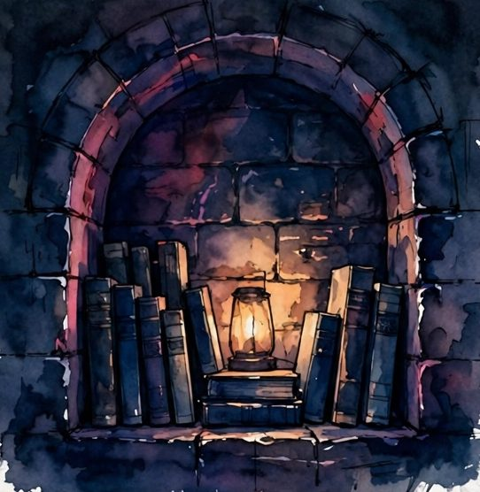
Глубокий альков, а в его глубине — книги, уходящие в мягкую тень рядами корешков.
Найти своё место — половина дела; вторая половина — не уйти из него при первой скуке. Всякое место сначала показывает человеку свою поверхность: стену, свет, удобный угол. Глубина открывается позже, тем, кто остался. Как колодец не отдаёт воду тому, кто заглянул и отошёл, так и ниша не отдаёт главного мимоходом.
Углубляться — значит замечать то, что видно только изнутри долгой привычки: как меняется свет в углу по временам года, как звучит дождь именно по этому карнизу, какие книги сами просятся в глубину алькова, а какие остаются у края. Место, в котором живут долго, обрастает тонкими знаниями, недоступными никакому гостю.
Мир вокруг поощряет перемещения: новые города, новые стены, новые начала. Но есть особая смелость в том, чтобы остаться. Оставшийся человек не беднее уехавшего — он выбрал глубину вместо ширины. И его ниша год от года становится не теснее, а глубже, как углубляется русло реки, которая не меняет своего пути после каждого дождя.
48Тихая радость своего угла
Радость своего угла не похожа на праздник. У неё нет гостей, тостов и громкой музыки; она приходит вечером, когда человек возвращается, ставит на место ключи, зажигает малый свет и садится туда, где всё давно устроено его руками. Эта радость не нуждается в свидетелях, и потому не иссякает от их отсутствия.
Она складывается из мелочей, которые со стороны не видны вовсе: из знакомого запаха дерева и ткани, из чашки, ждущей на своём месте, из дождя за окном, который шумит уже не тревожно, а привычно. Город продолжает сиять и спешить за стеной, но его сияние больше не требует, чтобы ему отвечали тем же.
Такую радость нельзя купить вместе с квартирой или получить в придачу к новой мебели. Она нарастает медленно, как нарастает патина на камне, — от прикосновений, от повторений, от вечеров, похожих один на другой и именно этим дорогих. Кто однажды узнал её вкус, тот уже не путает дом с адресом, а своё место — с самым лучшим из предложенных.
49Снятый угол
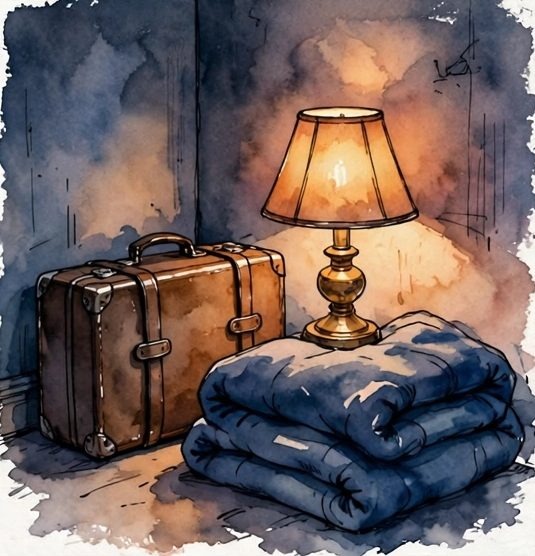
Снятый угол: чемодан у стены, сложенное одеяло и тёплая лампа, зажжённая в первый же вечер.
Снятый угол — не купленный и не наследованный; он взят у города на время, за помесячную плату, и в этом его особая честность. Никто не обещает, что здесь будет всегда. Но именно сюда человек приносит чемодан, расстилает одеяло и в первый же вечер зажигает лампу — не дожидаясь, пока место станет окончательно его.
Чужие стены поначалу молчат настороженно: пятна на штукатурке от прежних жильцов, следы гвоздей, чужая планировка, чужой запах краски. Но угол оживает быстро, если с ним обращаются бережно. Своя чашка на подоконнике, своя книга у изголовья, свой порядок вещей — и снятое жильё перестаёт быть просто квадратными метрами из объявления.
Многие большие дома начинались со снятого угла, и многие настоящие дома им же и остались. Право собственности здесь ни при чём: дом измеряется не документами, а тем, ждёт ли тебя вечером тёплый свет и знаешь ли ты, какой половице скрипнуть, чтобы не разбудить тишину. Снятый угол, в котором живут с любовью, прочнее иного дворца, в котором живут по привычке.
50Комната над ночной улицей
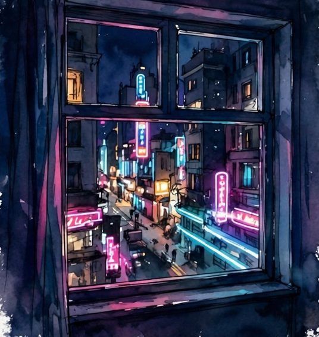
Окно малой комнаты высоко над неоновой улицей, где внизу шумит и сияет ночной город.
Высоко над улицей есть комнаты, из окон которых город виден как течение света. Внизу проплывают фары, вспыхивают вывески, дождь размывает отражения в мокром асфальте, и весь этот блеск, поднявшись на несколько этажей, становится тише и красивее — как музыка, которую слушают через закрытую дверь.
Жить над ночной улицей — значит иметь два мира, разделённых одним стеклом. Снаружи — мегаполис, который не спит и не собирается; внутри — стол, лампа, занавесь, которую можно отдёрнуть или задернуть по собственному желанию. Занавесь в такой комнате — не украшение, а граница, проведённая рукой жильца: сегодня город будет рядом, но не внутри.
Со временем к шуму снизу привыкают, как привыкают к шуму моря. Он перестаёт мешать и начинает укачивать: город несёт свою ночную вахту, а комната над ним держит свою — малую, тёплую, человеческую. И в этой высоте есть тихая свобода: быть в самом сердце сияния и при этом не принадлежать ему целиком.
51Капсула, которая стала домом
Есть жильё, в котором помещается ровно один человек, одна полка, один светильник и сон. Такие капсулы в больших городах придуманы для ночлега, а не для жизни, и всё же человек способен сделать домом даже это, если внутри найдётся место для одной главной вещи и одной привычки, без которых он — не он.
Капсула учит жестокой и полезной честности: лишнему здесь негде спрятаться. Каждая вещь либо нужна ежедневно, либо уходит; каждое слово, сказанное себе вечером, либо правда, либо бессонница. В такой тесноте быстро выясняется, что человеку для счастья требуется удивительно мало — и что это малое у него, как правило, уже есть.
Домом капсулу делает не размер, а обращение. Стоит повесить на стену одну фотографию, поставить у изголовья книгу, завести вечерний порядок — и безличная ячейка начинает держать человека, как держит его ниша: со всех сторон, кроме одной, обращённой к нему самому. Малое жильё не унижает. Оно просто показывает, как невелико на самом деле то, что мы называем необходимым.
52Пороги высотного дома
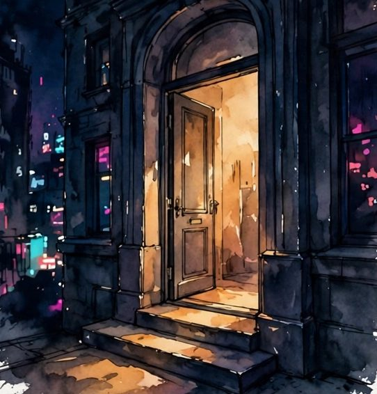
Порог высотного дома: тёплый свет проливается из приоткрытой двери на мокрый камень.
У высотного дома много порогов: у подъезда, у лифта, у каждой квартиры на длинной лестничной площадке. Человек, живущий на высоте, ежедневно пересекает их все, и каждый порог — маленькая граница между городом и домом, между общим и своим, между тем, что принадлежит всем, и тем, что начинается только для тебя.
Порог у подъезда в дождливый вечер особенно выразителен. Снаружи — мокрый камень, ветер, размытые огни улицы; внутри — тепло, сухой пол, свет, проливающийся из приоткрытой двери. Переступить его — значит сменить не только температуру, но и скорость: город остаётся за спиной со своей спешкой, а впереди — подъём, знакомый до каждой ступени.
Пороги нельзя перескакивать с пренебрежением. Тот, кто бережёт свой угол, и пороги проходит внимательно: вытирает ноги, придерживает дверь, не хлопает ею на весь этаж. Дом начинается не с квартиры и не с угла — он начинается с первого порога, на котором человек вспоминает, что дальше шуметь не следует, потому что дальше — своё и соседское, одинаково достойное тишины.
53Подоконник на высоте
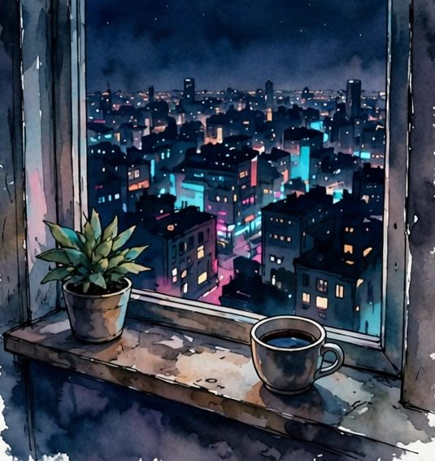
Подоконник на высоте: небольшое растение и чашка, а за стеклом — далёкие огни ночного города.
Подоконник в комнате на высоком этаже — место особенное: это самая близкая к небу полка в доме. На неё ставят то, что должно жить на границе миров: растение, которое тянется к свету сквозь стекло, чашку, из которой пьют, глядя вниз, на течение огней, камень, привезённый с берега давнего моря.
Растение на высоте ведёт себя иначе, чем внизу. Оно знает только погоду за стеклом и тепло комнаты, и этого ему достаточно, чтобы выпускать лист за листом, не спрашивая, какой этаж под ним и какой город вокруг. Глядя на него вечером, человек вспоминает, что расти можно и в малом горшке, если свет и уход регулярны.
Подоконник — первая ниша, которую устраивают даже те, кто слова такого не знает. Он узок, светел, обращён в комнату и в мир одновременно. Вещь, поставленная на него, видна и жильцу, и небу. И чашка, допитая на высоте под шум дождя по стеклу, запоминается дольше многих застолий внизу, где всё было больше, а главного было меньше.
54Ступенька у лифта
В каждом высотном доме есть ступенька или площадка у лифта, где люди невольно останавливаются: подождать кабину, перевести дух с сумками, договорить фразу, начатую ещё внизу. Это место ничьё и общее одновременно — короткий привал на вертикальной дороге, которую жители дома проходят по нескольку раз в день.
Такие остановки учат особому городскому терпению. Лифт идёт со своего этажа, в своём ритме, и нетерпение его не ускоряет. Человек, умеющий спокойно стоять у лифта, умеет и другое: не дёргать свою жизнь за рукав каждые пять минут, позволять событиям подходить в их собственной последовательности, как подходит кабина — с мягким звоном и раскрывающимися дверями.
Иногда именно на ступеньке у лифта происходят самые тёплые соседские разговоры — короткие, необязательные, ничем не грозящие. Здравствуйте, какой дождь, как ваш цветок на окне. Из таких фраз, сказанных на общем пороге, постепенно складывается дом, где люди не чужие. А дом, где люди не чужие, держит каждого из них крепче, чем держат одни только стены.
55Коридор, в конце которого — тепло
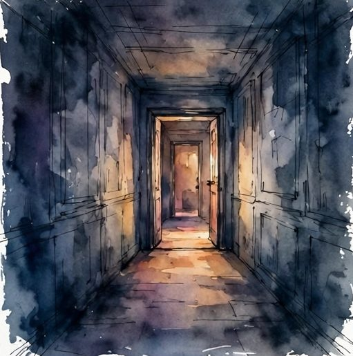
Длинный коридор завершается тёплой освещённой дверью, и весь путь к ней кажется короче.
Длинные коридоры высотных домов редко бывают красивы: одинаковые двери, ровный свет, гулкий пол. Но у каждого жильца есть в таком коридоре одна дверь, ради которой весь путь имеет смысл. Она может ничем не отличаться от соседних — та же краска, тот же номер, — но за ней тепло, и идущий знает это заранее.
Тепло в конце коридора меняет само движение. Человек идёт быстрее не от спешки, а от предвкушения; сумки кажутся легче, день, оставшийся снаружи, — дальше. Так устроена всякая дорога к своему месту: она измеряется не метрами, а тем, что ждёт в конце. Короткий коридор к чужой двери длиннее долгого коридора к своей.
Вечером, когда за той дверью зажигается свет, коридор как будто теплеет весь, до самого лифта. Случайный прохожий этого не заметит, но жилец видит: полоска света под дверью — самая надёжная примета дома. По ней узнают, что день прожит не зря, что где-то в огромном городе есть точка, где твой приход входит в порядок вещей.
56Окно, выходящее в ночь
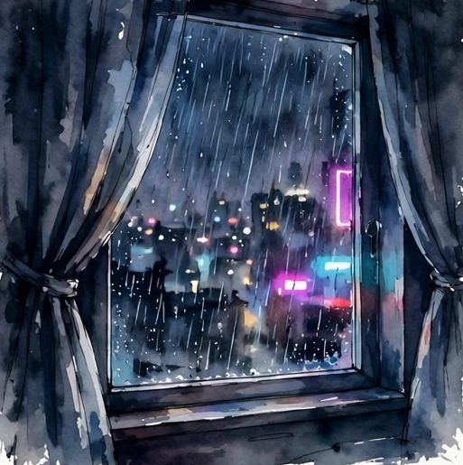
Окно в ночь: занавеси раздвинуты по краям, и темнота за стеклом кажется глубокой и близкой.
Окно, выходящее в ночь, не похоже на окно, выходящее в день. Днём за стеклом — улица, люди, дела; ночью там — глубина, в которой растворяются крыши, башни и редкие огни. Комната, у которой есть такое окно, получает вторую комнату, без стен и потолка, и в ней помещаются все мысли, которым тесно при свете.
Ночью окно работает как зеркало наоборот: оно показывает не лицо смотрящего, а то, что за его спиной, — тёплую комнату, лампу, угол, собранный за годы. Человек видит одновременно оба своих мира и понимает, какой из них держит его на самом деле. Ночь снаружи велика, но бессильна против одного зажжённого окна.
Занавеси у ночного окна нужны не для того, чтобы закрываться от ночи. Они обрамляют её, как рама обрамляет картину, и делают темноту домашней, посильной для глаза. Сидеть у такого окна с чашкой, смотреть, как дождь чертит по стеклу свои короткие строки, — одно из тех занятий, которые не дают ничего, кроме главного: чувства, что ты на своём месте.
57Стол у стены в маленькой комнате
Стол у стены — древнейшее устройство рабочего места. Стена перед глазами не даёт взгляду разбегаться, комната за спиной не требует внимания, и человек остаётся наедине с тем, что лежит перед ним: бумагой, инструментом, тканью, экраном, чашкой, отодвинутой ровно настолько, чтобы не мешать руке.
В маленькой комнате такой стол неизбежно становится центром мира. На нём едят и работают, пишут письма и чинят вещи, разбирают фотографии и планируют завтра. Он помнит всё это своими царапинами, и царапины эти — не ущерб, а летопись. Стол, который слишком берегут от работы, так и остаётся мебелью; стол, на котором живут, становится собеседником.
Вечером, когда дела закончены, стол у стены приводят в порядок — не из педантичности, а из уважения к завтрашнему утру. Убирают лишнее, оставляют главное, гасят лампу последней. Маленькая комната засыпает вокруг своего стола, как ниша засыпает вокруг своей вещи, и в этом сходстве — вся наука малого дома: у всего есть центр, и центр этот устроен руками.
58Угол для двоих стульев
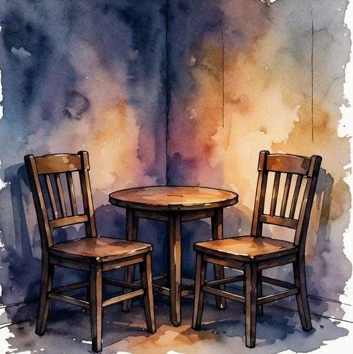
Два стула, повёрнутые друг к другу, стоят в тёплом углу в ожидании тихого разговора.
Один стул в углу — место для уединения; два стула — уже место для разговора. Угол, в котором помещаются двое, устроен иначе, чем угол для одного: здесь должно хватить света на два лица, тепла на две чашки и тишины на те паузы, без которых настоящий разговор превращается в обмен новостями и быстро иссякает.
Ставить второй стул — значит признать, что своё место не обязательно держать в одиночестве. Угол от этого не становится меньше; он становится глубже, как становится глубже комната, в которой звучит второй голос. Места, устроенные только для себя, со временем теснеют. Места, где есть стул для другого, растут изнутри, хотя стены их не двигаются ни на сантиметр.
Два стула, повёрнутые друг к другу, — самая простая и самая честная мебель в мире. Между ними нет стола-барьера, нет экрана, нет суеты. Только двое, тёплый свет и вечер, который никуда не торопит. Кто однажды устроил такой угол, тот знает: счастья для него нужно немного — чтобы второй стул не оставался пустым слишком долго.
59Второй стул
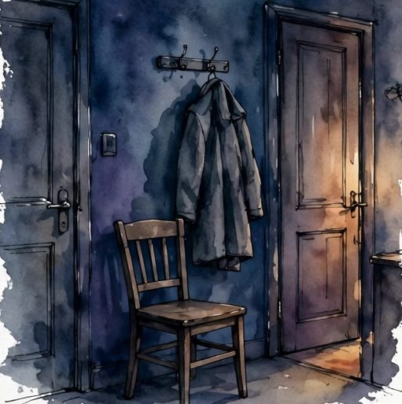
Второй стул ждёт в тёплом углу, а у двери на крючке висит пальто иного размера.
Второй стул не покупают случайно. Его приносят в дом в тот день, когда становится ясно: здесь будут не только жить, но и принимать; здесь есть кого ждать. Он может быть непохож на первый — другой высоты, другого дерева, — и в этой непохожести его правда: другой человек не обязан совпадать с хозяином дома ни ростом, ни меркой.
Пока гостя нет, второй стул держит угол открытым. На него кладут книгу, вешают плед, ставят сумку пришедшего, — но по-настоящему он занят ожиданием, и ожидание это не тревожное, а хозяйственное, спокойное. Дом со вторым стулом говорит входящему без слов: тебе здесь предусмотрено место. Не приткнуться у двери, а сесть, согреться, остаться до конца разговора.
А у двери, на соседнем крючке, однажды появляется пальто иного размера. Дом не делает из этого события и не устраивает перестановок: просто крючков становится два, чашек становится две, и вечерний свет падает теперь на два стула сразу. Так, без громких решений, своё место становится общим — не потеряв себя, а наконец себя завершив.
60Дом начинается с угла
Дом редко начинается с фасада, адреса или ключей, вручённых в торжественной тишине. Чаще он начинается с одного угла, который человек обжил первым: поставил стул, зажёг лампу, положил книгу — и вдруг почувствовал, что остальные комнаты теперь будут достраиваться вокруг этого места, как город достраивается вокруг своей первой улицы.
Угол — зародыш дома, его первая клетка. Из него расходятся привычки: сюда возвращаются вечером, отсюда начинают утро, здесь держат главное и сюда приносят новости. Даже если потом дом вырастет, переедет, сменит стены и город, первый угол останется в памяти мерой, по которой проверяют все последующие жильё и жильцов: тепло ли, тихо ли, своё ли.
Поэтому не стоит ждать целого дома, чтобы начать жить по-настоящему. Один угол, устроенный честно, уже дом — в малом, как семя уже дерево в малом. Поливайте его вниманием, держите в порядке, ставьте рядом второй стул, когда придёт время. Остальное приложится само: стены, годы и та тихая радость, с которой человек однажды скажет, не повышая голоса: я дома.
Канцелярия „Наша Ниша"
Одна канцелярия принимает всю переписку этого дома — вопросы, поправки, рассказы о ваших собственных местах. Письма читаются в порядке поступления. Канцелярия не даёт строительных и карьерных консультаций; она держит дом.
61Неон за окном, тепло внутри
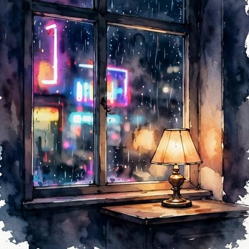
Окно делит мир надвое: снаружи — холодное сияние неона, внутри — тёплая лампа над столом.
Одно и то же окно вечером показывает два света, и они не смешиваются. Снаружи, сквозь мокрое стекло, дышит неон: розовый, бирюзовый, холодный, — свет улиц, витрин и машин, свет, который принадлежит всем и никому. Внутри, за спиной смотрящего, горит лампа, и её тёплый круг лежит на столе, на книге, на руках.
Неон не плох и лампа не лучше — у них разная работа. Неон зовёт наружу, обещает движение, встречу, новость; лампа удерживает внутри, обещает продолжение начатого. Человек у окна каждый вечер выбирает меру того и другого, отдёргивая или задергивая занавесь, и в этой малой власти — большая часть свободы городского жильца.
Когда дождь усиливается, неон расплывается по стеклу и становится красивее, а лампа от этого только ровнее. Комната не спорит с улицей через стекло; она просто держит свою температуру. Так и следует жить в сияющем городе: знать его свет наизусть — и всё же зажигать свой собственный, небольшой и тёплый, без которого дом превращается в филиал улицы.
62Маленький диод вместо свечи
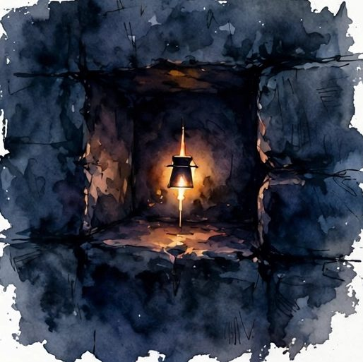
Маленький диод крупным планом: тёплая точка света в глубине тихого алькова.
Когда-то в нишах горели свечи и лампады, и их пламя требовало присмотра: подрезать фитиль, беречь от сквозняка, помнить о нём перед сном. Теперь в том же углублении часто стоит маленький диод — почти невесомый источник света, который не дрожит, не чадит и не гаснет от ветра, открытого в форточку в дождливую ночь.
Мал он до крайности: точка, а не пламя. Но работа его та же, что у лампады тысячу лет назад, — обозначать место, перед которым останавливаются. Светящаяся точка в алькове говорит комнате: здесь главное. Всё остальное может погружаться в сумерки; этот угол будет держать свой малый огонь столько, сколько нужно человеку рядом.
Есть нежность в том, как скромен этот свет. Он не пытается осветить комнату, не соперничает с экранами и вывесками, не требует к себе внимания всей квартиры. Он просто горит — ровно, тепло, неутомимо, — и его постоянство постепенно становится постоянством самого места. Свеча учила бережности; диод учит верности: гореть малым светом, но без перерывов.
63Призма на подоконнике
Призма на подоконнике выглядит как игрушка или как осколок стекла, забытый после уборки: небольшой прозрачный брусок, в котором днём почти ничего не видно. Но стоит лучу войти в неё в нужный час под нужным углом, и она вспоминает своё назначение — принимать свет не целиком, а с разбором, бережно и по порядку.
Всякий свет, приходящий в комнату, кажется простым, пока не встретит призму. Белый луч входит в грань единым — а выходит раскрытым, и комната вдруг узнаёт, из чего её свет состоял всё это время. Призма ничего не добавляет и ничего не выдумывает: она только показывает то, что было скрыто в привычном и потому невидимом.
Держать призму на подоконнике — значит держать дома напоминание о том, что простота обманчива. Один человек, одна судьба, один вечер тоже кажутся едиными только издали. Вблизи, при внимательном свете, в них различаются оттенки, и оттенки эти не спорят между собой — они дополняют друг друга до целого, как дополняют цвета в раскрытом луче.
64Один луч — целый спектр
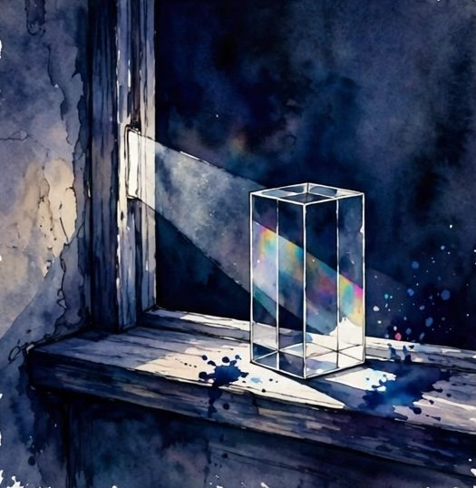
Призма на подоконнике принимает входящий луч и готовит его к тихому раскрытию.
Один луч, вошедший утром в комнату, сам по себе — только полоска света на полу. Но, пройдя через призму, он открывается целиком: перед человеком оказывается весь спектр, от тёплого красного края до холодного фиолетового, и каждый цвет лежит на своём месте, не тесня соседних и не сливаясь с ними в серую неразбериху.
Это зрелище не требует ни аппаратуры, ни подготовки — только подоконник, стекло точной формы и час, когда городское солнце или яркая вывеска напротив посылают свет под верным углом. Мегаполис шумит за окном, дождь то начинается, то перестаёт, а на стене комнаты в это время медленно раскрывается тихий веер света — как раскрывается правда о любом явлении, если дать ему правильную грань.
Поучиться у призмы стоит главному: не бояться того, что единое окажется многим. Луч не потерял себя, раскрывшись; напротив, только раскрывшись, он показал, каким богатством был с самого начала. Так и своё место, и своё дело, и свой человек при ближайшем, бережном рассмотрении оказываются шире первого взгляда — и это не усложнение жизни, а её полнота.
65Свет, разложенный на стене
Спектр света, разложенный веером на штукатурке, дрожит едва заметно в тишине комнаты.
Стена, на которую призма кладёт раскрытый луч, меняется на глазах. Обыкновенная штукатурка, серая и немаркая, вдруг принимает на себя полосу за полосой: тёплые тона у одного края, прохладные у другого, и между ними — переходы такой тонкости, что глаз не находит границ, хотя каждый цвет остаётся самим собой.
Смотреть на это можно долго, как смотрят на воду или на огонь, и по той же причине: картина не повторяется. Солнце сдвигается, луч ползёт по стене, цвета дышат и меняют соседей, а в дождливый день, когда свет приходит сквозь мокрое стекло и туман, веер становится мягче, глубже, словно говорит вполголоса. Комната в такие минуты ничего не должна человеку — она просто показывает, чем полон обычный свет.
Хорошо, когда в доме есть стена, готовая принять такой подарок: чистая, тихая, не занятая ни полками, ни крикливой мебелью. Оставьте одну стену свободной — не из бедности, а из ожидания. Свет, разложенный на ней, стоит многих украшений, потому что его нельзя купить, повесить и забыть. Его можно только встречать — каждый раз заново, в свой час.
66Экраны гаснут — угол остаётся
Вечером экраны вспыхивают по всему дому и по всему городу: они зовут, сообщают, требуют, обещают. Их свет холоден и нетерпелив — он рассчитан на то, чтобы его заметили первым. Но наступает час, когда экраны гаснут один за другим, и в наступившей темноте выясняется, что в комнате осталось ещё что-то, кроме темноты.
Остаётся угол. Его малый свет не гаснет вместе с новостями и лентами, потому что он зажжён не для сообщений, а для присутствия. В тишине, наступающей после экранов, угол звучит особенно ясно: вот стул, вот книга, вот тёплая точка диода в алькове. Всё это было здесь и раньше, просто яркость мешала рассмотреть, как много держится на малом.
Гасить экраны на ночь — не подвиг и не отказ от мира. Это просто возвращение пропорций: большому сиянию — его часы, малому углу — его. Человек, у которого есть место, не зависящее от сети, спит спокойнее. Он знает: что бы ни случилось в городе до утра, его угол встретит его тем же — теплом, порядком и тишиной.
67Утро после неоновой ночи
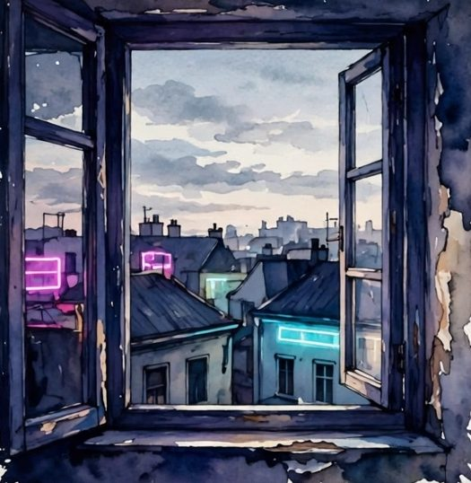
Рассветное окно после неоновой ночи: серый свет утра ложится на ещё тёплый подоконник.
После ночи, проведённой под неоном, утро приходит в город не сразу, а постепенно, как вода прибывает в тихой гавани. Сначала гаснут вывески, потом бледнеет мокрый асфальт, потом в окнах башен появляется серый, честный свет, который ничего не приукрашивает и ни к чему не зовёт. Комната в этот час выглядит особенно правдиво.
Неоновый свет прощает всё: он красит штукатурку, прячет трещины, делает моложе лица и вещи. Утренний свет не прощает ничего — и именно поэтому ему доверяют. Под ним проверяют вчерашнюю работу, читают то, что писали ночью, смотрят на свой угол без украшений. Что выдержало утро, то настоящее; остальное было эффектом, а эффекты к полудню рассыпаются сами.
Но утро не враг ночи. Оно закрывает её, как закрывают книгу, дочитав главу: с благодарностью и без сожаления. Лампа гаснет, диод бледнеет, занавесь отдёргивается до конца — и угол, державший человека всю ночь, уступает место дню, не теряя себя. Вечером город снова засияет, дождь снова зашумит по стеклу, и всё повторится — но уже на один день глубже.
68Свет, который не спорит
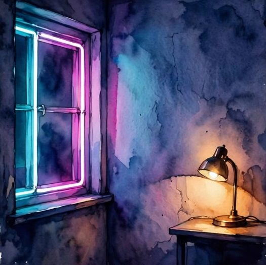
Два источника света стоят в одной комнате и не спорят: каждый освещает своё.
В одной комнате могут гореть два света, и это не обязательно состязание. Тёплая лампа над столом и холодноватое сияние улицы за окном не отменяют друг друга: первое держит работу и чтение, второе напоминает, что мир за стеной велик и продолжается. Каждый свет честно делает своё, и комнате хватает обоих.
Спор начинается там, где один источник требует признать его единственным. Яркость, которая не терпит рядом с собой тени, быстро утомляет глаза и душу; тьма, которая гасит всякую лампу из принципа, не даёт работать. Мудрость угла — в распределении: знать, какой свет для чего, и не заставлять лампу изображать солнце, а солнце — ночник у изголовья.
Люди рядом друг с другом устроены похоже. Двое в одном углу не обязаны светить одинаково, в одну сторону и с одной силой. Достаточно, чтобы их свет не гасил чужого. Комната, где источники не спорят, кажется просторнее своих метров; дом, где не спорят люди, — теплее своего отопления. Всё остальное — дело привычки и доброй воли.
69Полутень в эпоху яркости
Время, в которое мы живём, любит яркость: яркие витрины, яркие экраны, яркие заявления. Всё должно быть видно издалека и понятно с первого взгляда. На этом фоне полутень кажется недостатком освещения, местом, куда ещё не дотянулась рука прогресса. Но глаза, живущие в вечной яркости, устают первыми — и первыми начинают искать именно полутень.
Полутень — не полутьма. Это свет, убавленный до человеческой меры, свет, при котором предметы сохраняют объём, а лица — выражение. В полутени не читают мелкий шрифт и не рассматривают документы; в полутени разговаривают, молчат, вспоминают. У каждого времени суток и у каждого дела есть своя освещённость, и умение убавлять свет — такое же искусство, как умение его зажигать.
Угол в полутени не прячется от эпохи яркости — он предлагает ей передышку. Человек, посидевший в приглушённом свете под шум дождя, возвращается к яркому миру спокойнее, чем тот, кто никогда не гасил верхнего света. Берегите в доме способность к полутени: абажур, диод, занавесь — простые вещи, а держат они самое дорогое, что есть у глаз и у души, — меру.
70Отсвет на штукатурке
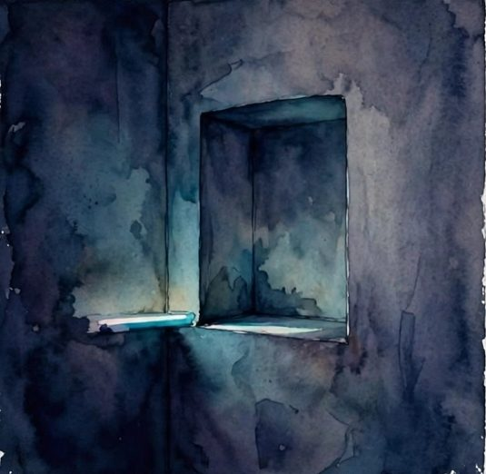
Полутень на штукатурке и приглушённое сияние в глубине дают отдых глазам и мыслям.
Не всякий свет падает прямо. Самый нежный из них — отсвет: свет, уже побывавший где-то и пришедший в угол не от источника, а от стены, от воды, от мокрого камня за окном. Улица сияет в лужу, лужа бросает блик на потолок, и комната получает свет, смягчённый двумя отражениями, как голос, смягчённый расстоянием.
Отсвет на штукатурке изменчив и потому жив. Он дрожит, когда по улице проходит машина, вспыхивает, когда вспыхивает вывеска напротив, затихает вместе с дождём. Сидящий в углу человек читает по нему ночную жизнь города, не вставая с места, — как читают по тени на стене о том, что происходит за окном, куда не хочется подходить.
Прямой свет показывает предметы; отсвет показывает настроение. Дом, освещённый только прямо, бывает ясен и неуютен одновременно. Стоит добавить в него отсвет — тёплый блик на стене над нишей, мягкое сияние из соседней комнаты, — и ясность остаётся, а неуют уходит. Учитесь замечать отсветы: они — вежливость света, его способ приходить не с требованием, а с предложением.
71Один источник — достаточно
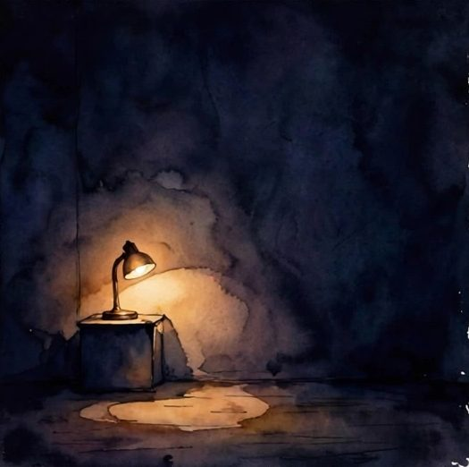
Одна малая лампа в большой тёмной комнате освещает ровно столько, сколько нужно одному человеку.
Большой тёмной комнате не нужна люстра, чтобы в ней можно было жить. Достаточно одной малой лампы в углу, где сидит человек. Её круг невелик: стол, книга, чашка, руки. Всё остальное остаётся в темноте — и темнота эта не враждебна, а бережлива: она не отвлекает, не показывает лишнего, не требует убирать и приводить в порядок всю комнату ради одного вечера.
Один источник учит сосредоточению лучше многих рассуждений о главном. Когда свет один, взгляд не разбегается; когда тёмен остальной дом, тишина плотнее. Человек при одной лампе быстро понимает, как мало ему в сущности нужно для полного вечера: место, свет, дело и время. Четыре вещи — а сколько домов, полных света и вещей, не могут сложить из них одного спокойного часа.
Не бойтесь больших тёмных комнат и больших тёмных периодов. В них не надо освещать всё сразу и решать всё сразу. Зажгите один источник там, где вы сейчас, устройте угол честно — а темнота подождёт своей очереди. Утро и остальной свет придут в свой срок, как приходили всегда.
72Свет бережёт, а не показывает
Свет бывает разным по намерению. Один свет показывает: он выставляет предмет напоказ, требует оценки, ставит всё на сцену. Другой свет бережёт: он прикрывает, смягчает, позволяет вещи и человеку находиться рядом без необходимости быть рассмотренными. Витрины умеют первое; угол, ради которого пишется эта страница, — второе.
Берегущий свет не прячет и не приукрашивает. Он просто не настаивает. При нём можно молчать, не боясь, что молчание будет истолковано; можно держать в нише скромную вещь, не опасаясь, что её скромность кто-нибудь измерит. Лампа с абажуром, диод в глубине алькова, отсвет на стене — все они светят так, как смотрит близкий человек: внимательно, но без допроса.
Дом измеряется и этим: умеет ли его свет беречь. Если в доме есть хотя бы один источник, при котором не нужно притворяться и обороняться, дом уже наполовину устроен. Остальное — мебель, привычки, годы. Начните с малого света, который бережёт, а не показывает, — и многое в комнатах само встанет на свои места, как встаёт на место всё, чему перестали мешать.
73Ритм ночного города
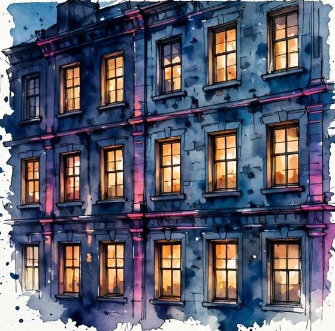
Окна огромного города загораются вечером в своём ритме, каждое — в свой срок.
У ночного города есть ритм, и он слышен не ушами, а глазами. Вечером окна в башнях загораются не все сразу: одни вспыхивают с первой темнотой, другие — спустя час, третьи держатся тёмными до полуночи, словно их жильцы долго шли домой сквозь дождь и туман. Город дышит окнами, и дыхание это неровное и живое.
Каждое окно — чей-то вечер, начавшийся в свой срок. За одним уже ужинают, за другим ещё работают при настольной лампе, за третьим только что поставили второй стул и ждут. Глядя на башню напротив, человек видит сотни чужих начал и понимает, что его собственный вечер — один из них, просто его.
Свой маленький ритм внутри большого — не бунт и не отставание. Это способ жить в мегаполисе, не растворяясь в нём. Город задаёт темп дня, но вечерний темп человек вправе держать сам: когда гасить экраны, когда зажигать диод в нише, когда садиться к окну. Кто держит свой ритм, тот и в самом шумном доме сохраняет тишину, потому что тишина, в сущности, и есть ритм, который никуда не спешит.
74Возвращаться каждый вечер
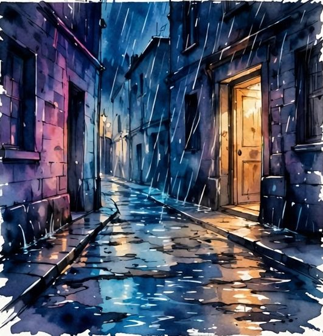
Тропа света в дождливой улице ведёт к тёплой двери, к которой возвращаются каждый вечер.
Возвращение — самый недооценённый обряд городской жизни. Дорога домой повторяется сотни раз: та же улица, тот же поворот, та же дверь, и именно в этом повторении её сила. Вещи, которые делаются однажды, бывают событиями; вещи, которые делаются каждый вечер, становятся устройством души.
Идти домой сквозь дождливый город хорошо, когда знаешь, что в конце пути — тёплая дверь. Не парадная, не торжественная — просто своя: за ней ждёт угол, лампа включается тем же движением, чашка стоит на том же месте. Предвкушение этого простого порядка несёт человека через мокрые улицы легче, чем несёт его спешка или развлечение.
Тот, кто возвращается каждый вечер в одно и то же место, постепенно меняет и само место. Стены впитывают ритм его приходов, вещи встают туда, где рука ищет их в темноте, тишина настраивается к его шагу. Дом и человек притираются друг к другу, как притираются камень и вода. И однажды вечером, открывая дверь, человек понимает, что возвращался он не в квартиру. Он возвращался к себе.
75Сезон дождей
Сезон дождей приходит в город не по календарю, а по небу: сначала один вечер с мокрым асфальтом, потом неделя, потом кажется, что дождь шёл всегда и будет идти ещё долго. Улицы меняют голос, крыши меняют цвет, а окна, за которыми живут люди, светятся раньше и теплее — словно дом отвечает погоде своим собственным климатом.
К сезону дождей угол готовится, как готовятся к долгому гостю. Проверяется окно, чтобы не дуло; переставляется растение туда, где ему хватит серого света; достаётся плед, который летом казался лишним. Никакой суеты в этих приготовлениях нет — есть уважение к тому, что ближайшие месяцы вечера будут длиннее, а мир снаружи — мокрее и тише одновременно.
Дождливые сезоны учат домоседству в лучшем смысле слова: умению находить в вынужденной неподвижности не скуку, а глубину. Когда улица неделями закрыта водой, свой угол раскрывается, как раскрывается книга, которую наконец не нужно никуда нести. Кто пережил с одним местом сезон дождей, тот уже не гость в нём и не временный жилец. Тот — жилец настоящий, проверенный непогодой.
Канцелярия „Наша Ниша"
Одна канцелярия принимает всю переписку этого дома — вопросы, поправки, рассказы о ваших собственных местах. Письма читаются в порядке поступления. Канцелярия не даёт строительных и карьерных консультаций; она держит дом.
76Городские времена года
Сезон дождей в городе: мокрая стена, а в нише под ней — растение, переживающее непогоду.
У городского года свои времена, и они не совпадают с деревенскими. Здесь весна начинается не с первой травы, которой нет, а с первого вечера, когда окна открывают настежь и в комнату входит тёплый воздух с мокрых крыш. Лето узнают по тому, что неон отражается уже не в лужах, а в сухой пыли витрин и в речной воде далеко внизу.
Осень в мегаполисе — время, когда город снова становится ночным: темнеет рано, башни светятся дольше, и углы в квартирах снова делаются главными комнатами дома. Зима же приходит с первым вечером, когда дождь сменяется чем-то более тихим и человек, вернувшись домой, дольше обычного стоит у окна, глядя, как меняется свет над крышами.
Своё место проходит все эти времена года вместе с жильцом и ведёт их летопись точнее календаря. Растение на подоконнике поворачивается к новому свету, плед возвращается на второй стул, призма на окне ловит луч под иным углом и кладёт его на другую часть стены. Замечать эти малые перемены — значит жить не в датах, а во времени.
77Ночь начинает, утро закрывает
Рассвет над крышами, видный из окна алькова, закрывает ночь тихо и без торжества.
Ночь в этом доме начинает почти всё: разговор, работу, молчание, чтение. Она расставляет мебель тишины, зажигает малые огни и даёт человеку ту меру уединения, в которой он наконец слышит себя. Но ночь не умеет заканчивать — заканчивать умеет утро, и в этом разделении труда есть справедливость, которой стоит поучиться.
Утро закрывает ночные дела без упрёка. Оно не спрашивает, почему не дописано письмо и не дочитана книга; оно просто гасит лампу дневным светом, ставит чашку в раковину и переводит дом на дневной порядок. Что ночью было главным, утром становится частью целого дня — и это не умаление, а проверка: главное, пережившее утро, остаётся главным и вечером.
Хороший день устроен как хороший дом: у него есть начало, данное ночью, и закрытие, данное утром, а между ними — работа света. Человек со своим углом учится тому же ритму: начинать в тишине, при малом огне, и закрывать спокойно, без сожаления о незавершённом. Всё, что не закрылось сегодня, завтра откроется снова — ниша терпелива, и её терпению можно доверять.
78Терпение как форма ухода
Уход за местом редко выглядит как работа. Он не требует ни инструментов, ни расписания: протереть пыль в алькове, поправить ткань, переставить чашку на полсантиметра, проверить, не перегорела ли точка света в глубине. Но за этими малыми движениями стоит большое качество, без которого ни одно место не живёт долго, — терпение.
Терпение — это уход, растянутый во времени. Цветок на подоконнике не растёт быстрее от того, что его дёргают; стена не становится теплее от спешки; привычка возвращаться не складывается за неделю. Всё настоящее в доме созревает медленно, и терпение — не ожидание вопреки жизни, а сама форма, в которой жизнь места происходит.
Терпеливый человек не бросает угол при первой трещине и не объявляет дело не своим при первой неудаче. Он чинит, ждёт, смотрит, как место отвечает на заботу — сначала никак, потом едва заметно, потом всем своим теплом сразу. Так ухаживают за садом, за дружбой и за собственным призванием. Разница между ними меньше, чем кажется: везде нужно одно и то же — приходить, оставаться и не торопить рост.
79Время углубляет
Старый глубокий альков: патина камня, тёплый свет и следы многих бережных рук.
Когда в место вкладывают время, оно начинает отвечать глубиной. Стены нового угла ровны и безличны, как ровна первая страница; старый угол покрыт следами прожитых вечеров: камнем, потемневшим от прикосновений, деревом, отполированным руками, штукатуркой, принявшей в себя годы света от одной и той же лампы.
Время не портит ухоженное место — оно его достраивает. Трещинка, вовремя заделанная, становится частью узора; выцветшая ткань — мерой прожитого лета; книга, годами лежавшая в глубине алькова, приобретает тот вес, который не зависит от числа страниц. Глубина ниши измеряется не сантиметрами до задней стены, а годами, которые в ней помещаются без тесноты.
Поэтому старый угол нельзя повторить в новой квартире за один день, как нельзя повторить дружбу с незнакомцем. Его можно только начать заново — с одного предмета, одного света, одного вечера — и дать времени делать свою медленную работу. Оно сделает. Время всегда достраивает то, за чем ухаживают, и всегда разбирает то, что брошено. Выбор между этими двумя его работами человек делает ежедневно, возвращаясь или не возвращаясь домой.
80Годовщины тихих мест
Гирлянда малых тёплых огней, тихо обвившая арку, — ниша в её вечернем убранстве, собранном не к празднику, а к годовщине.
У тихих мест тоже бывают годовщины, хотя их не отмечают застольем. Год с того вечера, когда здесь впервые зажгли лампу. Год с того дня, когда поставили второй стул. Дата, которую помнит только жилец, — и именно потому она настоящая: её не нужно подтверждать ни гостями, ни фотографиями, ни чужим одобрением.
Вспоминать в такую годовщину следует не события, а состояние. Каким был угол в начале: пустым, чужим, случайным. Каким стал: тёплым, точным, своим. Между этими двумя состояниями — не ремонт и не покупки, а просто время, прожитое внимательно, вечер за вечером, дождь за дождём. Летопись места пишется не вещами, а возвращениями.
Отметить годовщину тихого места можно самым простым способом: посидеть в нём без дела чуть дольше обычного, зажечь тот же малый свет, достать ту же чашку. Никакого итога подводить не нужно — место само является итогом. Впереди, если повезёт, ещё много таких дат, и каждая следующая будет глубже предыдущей, как глубже становится русло реки, которая не изменяет своему пути.
81Не торопить рост
В нише ничто не растёт по приказу. Растение на полке тянется к свету в своём темпе, ткань медленно принимает форму угла, дерево отдаёт тепло не сразу, а спустя часы. Кто торопит, тот слышит лишь собственное нетерпение и не замечает тихого движения, которое уже началось без его участия и ведётся без суеты.
Город за стеной спешит иначе: огни сменяются быстро, витрины обновляются к утру, потоки людей не знают пауз. Внутри тёплого угла мера другая. Здесь выжидают, пока краска ляжет ровно, пока клей схватится, пока вещь найдёт своё место не по первому побуждению, а по долгому соседству с другими вещами, светом и тишиной.
Не торопить рост — значит доверять медленной точности. Поливать вовремя, но не заливать. Поддерживать, но не тянуть за стебель. Возвращаться взглядом и видеть, как малое становится устойчивым. Однажды утром ниша покажется сложившейся, хотя сложилась она давно — в те дни, когда никто не требовал от неё немедленного ответа и не мерил её чужими сроками.
82Ожидание без тревоги
На снимке — пустой стул и чайник в тихом углу, где ожидание не требует ни слов, ни движения.
Ожидание в нише не похоже на напряжённую паузу перед дверью. Оно мягче и тише: стул стоит пустым, чайник остывает медленно, свет лежит на стене и не требует, чтобы его замечали каждую минуту. Время проходит, но не давит. Оно оставляет место дыханию, взгляду в окно, короткому сну в кресле после долгого дня.
Тревога любит заполнять пустоту догадками. Тихий угол отвечает на это простым порядком вещей. Чашка вымыта и поставлена на место, книга закрыта на закладке, дождь стучит по стеклу в ровном ритме. Ничего не обещано и ничего не отнято. Ожидание перестаёт быть испытанием и становится частью устроенного вечера, его спокойной серединой.
Когда нужное наконец приходит — письмо, гость, ответ, ясная мысль, — его встречают без суеты. Оно входит в уже готовое место, где не метались и не ломали тишину впустую. И если не приходит сегодня, вечер всё равно состоялся: чай был тёплым, свет горел ровно, а стул терпеливо хранил возможность встречи до следующего дня.
83Старые вещи в новом свете
На снимке — старые вещи под новым светом, падающим из окна и ложащимся на их потёртые края.
Старая вещь не становится новой оттого, что на неё упал другой свет, но она открывается иначе. Царапина на крышке, потёртость на корешке, потускневшая ручка вдруг перестают быть только следами износа. В вечернем сиянии, пришедшем из окна сквозь влажный воздух, они читаются как строки долгой жизни, которую не нужно исправлять или прятать.
Ниша умеет давать вещам вторую встречу с взглядом. Поставьте давно знакомый предмет под лампу, рядом с кирпичной стеной, и он заговорит тише, но яснее. Не о своей цене и не о моде своего времени, а о руках, которые его берегли, о домах, где он стоял, о вечерах, которые он пережил вместе с людьми.
Новый свет не льстит и не приукрашивает. Он лишь меняет час осмотра. Утром вещь была обыденной, вечером стала значительной, ночью — почти молчаливой. И в этой перемене нет обмана: меняется не прошлое предмета, а внимание того, кто наконец остановился рядом и позволил старой вещи договорить то, что она давно хранила в своей форме.
84Время — второй строитель
Первый строитель приходит с руками, мерой и терпением. Он ставит полку, проводит свет, выбирает стену. Второй строитель приходит позже и без инструментов: это время. Оно осаживает дерево, смягчает углы, делает шов привычным, а краску — частью стены. Без его медленной работы ниша остаётся только что сделанной, но ещё не обжитой по-настоящему.
Время добавляет то, чего нельзя купить и установить за один вечер. Лёгкую пыль в луче лампы, которая говорит о покое. Тёплую потёртость там, где ладонь касается чаще всего. Запах бумаги, ткани и нагретого дерева, сплетённые в один домашний воздух. Эти следы не портят место — они свидетельствуют, что здесь действительно живут и возвращаются.
Поэтому устроенную нишу не следует то и дело начинать заново. Ей позволяют длиться. Поправляют необходимое, берегут сложившееся, не стирают каждый след прошедших месяцев. Со временем угол становится глубже самого себя: в нём хранятся не только вещи, но и вечера, когда они стояли на своих местах, и тишина, которая успела стать привычной и надёжной.
85Хром
На снимке — хромированный чайник, в чьей гладкой поверхности тихо дрожит отсвет уличного неона.
Хром в нише не кричит, хотя умеет блестеть. Его поверхность держит отсветы города и возвращает их смягчёнными: неоновую полосу с улицы, тёплую точку диода, край окна после дождя. В маленьком углу хромированная вещь становится тихим зеркалом вечера, но зеркалом сдержанным — она отражает не лицо, а настроение света вокруг себя и рядом.
Рядом со старым кирпичом хром не спорит, а уточняет. Кирпич хранит шероховатость и тепло обжига, металл даёт гладкую и холодную границу. Между ними возникает точное соседство времён: ручная кладка и ровная заводская поверхность, неровный край и чистая линия. Ниша собирает их без желания примирить насильно — различие само становится её достоинством.
Ухаживать за хромом просто и поучительно. Мягкая ткань, тёплая вода, одно медленное движение — и поверхность снова ясна. Но ясность эта недолга в живом доме: на ней оседает пар от чайника, остаётся след пальца. И это правильно. Блеск в нише не музейный, а домашний: он существует рядом с теплом, дыханием и ежедневным употреблением вещей.
86Стекло
На снимке — стеклянная панель в каплях дождя, за которой мягко сияет вечерний город.
Стекло в тёплом углу живёт двойной жизнью. Днём оно почти исчезает, пропуская свет и оставляя лишь тонкую грань на полке или в раме. Вечером, когда за ним собирается влажный воздух ночного города, оно становится заметным: на нём оседают капли, в нём двоятся огни, и граница между комнатой и улицей делается зыбкой, почти задумчивой.
Стеклянная панель в нише не отделяет, а переводит. Она берёт сияние извне и приносит его внутрь уже изменённым — рассеянным, смягчённым, пригодным для тишины. Сквозь мокрое стекло город не исчезает, но перестаёт торопить. Его огни становятся пятнами света на стене, его дождь — ровным шумом, за которым легче слышать собственное дыхание и страницы книги.
Хрупкость стекла здесь не недостаток, а мера обращения. Его касаются осторожно, ставят бережно, протирают медленно. Оно напоминает, что не всё в доме должно быть прочным, как камень. Некоторые вещи держатся именно вниманием: пока их берегут, они держат свет; пока свет проходит сквозь них, угол сохраняет свою прозрачную и спокойную глубину.
87Провод, вьющийся, как плющ
Провод в нише можно было бы спрятать и забыть, но иногда честнее оставить его видимым. Он тянется вдоль стены от розетки к малой лампе, огибает кирпич, поднимается к полке и замирает в аккуратной петле. В его изгибе есть что-то растительное: он будто ищет опору и свет, только свет этот он несёт в себе сам.
Как плющ на старой стене, провод соединяет разрозненное. Он связывает тихий угол с большой сетью города, с его ночным током, с дальними окнами, где тоже кто-то включил лампу над столом. Но в нише эта связь не шумит. Ток идёт скрыто, лампа горит ровно, а провод лишь напоминает о пути, который проходит тепло, прежде чем стать видимым.
Вьющийся провод учит смирению перед устройством вещей. Красота угла не отменяет его зависимости от простого и необходимого. Забота здесь видна в мелочах: провод не натянут, не перегнут, не брошен под ноги. Он уложен с уважением к своему делу — вести свет бережно, как стебель ведёт сок к листу, без спешки и лишнего шума.
88Старый кирпич
На снимке — старая кирпичная стена с арочной нишей, где каждый кирпич хранит свой оттенок и след времени.
Старый кирпич не бывает одинаковым. Один темнее, другой светлее, у третьего сбит угол, у четвёртого в порах задержалась пыль многих лет. Стена из такого кирпича не нуждается в украшении: она сама хранит разнообразие, которое нельзя повторить новой отделкой. В арочной нише эта неровность становится особенно заметной и особенно уместной для тихого места.
Кирпич помнит огонь, в котором родился, и руки, которые клали его на раствор. Он медленно вбирает дневное тепло и долго отдаёт его вечером, когда город за окном остывает под дождём. Прислонитесь ладонью к такой стене — и почувствуете не холод камня, а сдержанную теплоту, накопленную без свидетелей и сохранённую для этого часа.
В нише старый кирпич не закрывают полностью. Оставляют видимым хотя бы часть кладки, чтобы место не теряло своей основы. Полка, ткань и хром рядом с ним становятся мягче, а свет — глубже. Кирпич напоминает: тёплый угол строится не на пустоте, а на том, что уже выдержало время, погоду и соседство с многими человеческими жизнями.
89Тёплое дерево среди хрома
На снимке — деревянная полка среди хромированных поверхностей, тёплая на вид даже в вечернем полусвете.
Среди гладких и блестящих поверхностей дерево вносит иную меру тепла. Его не нужно полировать до зеркала: достаточно ровной полки, на которой видны годичные линии, лёгкая шероховатость края и след от чашки, поставленной однажды без подставки. Дерево не отражает город, как хром, — оно впитывает вечер и отвечает на него глухим, спокойным тоном.
Полка из тёплого дерева держит вещи иначе, чем металлическая. Книга на ней лежит домашнее, чашка стоит увереннее, малый светильник кажется ближе к огню, чем к прибору. Рядом с хромированным чайником дерево не выглядит старомодным. Оно напоминает, что удобство измеряется не только точностью линий, но и тем, как ладонь встречает поверхность в полутьме.
Со временем дерево в нише становится только честнее. Оно темнеет там, где его касаются, светлеет у окна, хранит тонкий запах сухой древесины после дождливого дня. И если хром говорит о ясности, а стекло — о прозрачности, дерево говорит о длительности: о том, что тёплый угол можно строить из материала, который стареет достойно и не боится следов жизни.
90Ткань, приглушающая свет
Ткань в нише работает тихо, как и всё здесь. Она не задерживает свет полностью и не пропускает его без изменения. Занавесь, плед или простой отрез материи над лампой делают сияние мягче, убирают резкость диода, оставляют тёплую середину вечера. Свет становится пригодным для чтения, для молчания, для лица, уставшего от ярких уличных огней.
У ткани есть голос, хотя она почти не звучит. Шелест, когда её поправляют. Глухой звук, когда книга ложится на покрывало. Способность гасить эхо маленькой комнаты, где кирпич и стекло иначе делали бы каждый шаг слишком отчётливым. Ниша нуждается в такой мягкости: без неё тишина была бы звонкой, а с тканью она становится глубокой и обжитой.
Выбирать ткань следует не по громкому узору, а по руке и по свету. Приложите её к лампе вечером, посмотрите, как меняется стена, посидите рядом. Хорошая ткань не спорит с вещами и не требует внимания к себе. Она лишь приглушает лишнее, чтобы главное — тёплый угол, книга, чашка, дыхание рядом — оставалось ясным без напряжения.
Канцелярия „Наша Ниша"
Одна канцелярия принимает всю переписку этого дома — вопросы, поправки, рассказы о ваших собственных местах. Письма читаются в порядке поступления. Канцелярия не даёт строительных и карьерных консультаций; она держит дом.
91Строить руками в век машин
На снимке — инструменты, аккуратно разложенные на рабочем столе перед началом тихой вечерней работы.
Машина рядом тихо гудит, выполняя свою точную работу, а руки в это время делают другую — медленную и незаменимую. Они примеряют полку к стене, проверяют ладонью край, держат провод, пока он не ляжет как надо. В век быстрых устройств ручная работа не выглядит отсталой. Она возвращает строительству меру человека, его роста, его силы и его терпения.
Руками строят не потому, что нет иных средств, а потому, что некоторые решения принимаются только прикосновением. Дерево само подсказывает, где его можно резать, а где оно треснет. Кирпич отвечает тяжестью. Ткань показывает, как ляжет в складку. Машина даёт ровность, но рука даёт согласие материала и места, без которого ниша останется собранной, но не сложившейся.
Построенное руками дольше хранит память о своём начале. Каждый неровный шов, каждая подогнанная деталь напоминают вечер, когда угол ещё только возникал среди шума города. И когда позже вы касаетесь полки или поправляете лампу, рука узнаёт собственную работу. Это узнавание — тихая форма благодарности себе за терпение и месту за то, что оно приняло труд.
92Ухаживать руками
На снимке — малые инструменты, выложенные в ряд на ткани в ожидании спокойной работы.
Уход за нишей не требует больших дел. Он состоит из малых прикосновений, повторённых вовремя: протереть стекло, смахнуть пыль с кирпича, поправить ткань, проверить, не перегрелась ли лампа, не ослаб ли шнур. Руки делают это почти без размышлений, но именно в такой привычке место сохраняет свою ясность дольше, чем от редких и шумных уборок.
Ухаживать руками — значит замечать раньше, чем что-то сломается. Лёгкий скрип полки, трещину в штукатурке, потускневший хром, край ткани, который начал осыпаться. Внимание здесь не тревожно, а бережно. Оно не ищет недостатков ради упрёка, а поддерживает порядок, в котором каждая вещь продолжает служить спокойно и не требует срочного вмешательства.
Есть в этом уходе и обратный дар. Пока руки заняты простым делом, мысли перестают метаться. Вечер приобретает ритм: вытереть, поставить, зажечь, сесть. Ниша отвечает на заботу не словами, а состоянием — ровным светом, чистым воздухом, тишиной без пыли. И человек, ухаживающий за малым углом, незаметно учится так же бережно обращаться с собственным временем.
93Инструменты тихой работы
Инструменты тихой работы невелики и негромки. Отвёртка, молоток с деревянной ручкой, мягкая щётка, нож для ткани, рулетка, уровень, шпатель. Они не занимают много места и не требуют особого шкафа: достаточно ящика или полосы ткани, где каждый предмет лежит на своём месте и находится на ощупь даже при слабом вечернем свете.
Хороший инструмент не спешит показать силу. Он удобен в ладони, честен в весе, точен в малом движении. Им не ломают и не торопят материал, а помогают ему занять нужное положение. Тихая работа вообще не любит резких звуков: стук здесь короткий, сверление редкое, а чаще слышны шорох щётки, лёгкое трение дерева и пауза перед точным движением.
После работы инструменты возвращают на место чистыми. Это не педантичность, а завершение жеста. Ящик закрывается, ткань сворачивается, стол освобождается для книги и чашки. Ниша снова становится местом покоя, а не мастерской. Но инструменты остаются рядом — как обещание, что любую трещину можно поправить, любую полку укрепить, любой вечер продолжить делом, если тишина попросит рук.
94Шов, который виден
На снимке — видимый шов на ткани в нише, ровный и честный при мягком свете.
Видимый шов не прячут, если он сделан честно. Ровная строчка на ткани, соединяющей два края в нише, не притворяется, будто материя всегда была целой. Она показывает место соединения и тем самым делает вещь понятнее. В этом нет небрежности. Напротив, открытый шов требует большей точности: каждый стежок виден, каждая неровность будет замечена при свете лампы.
В устроенном месте многое держится на таких соединениях. Дерево примыкает к кирпичу, провод подходит к лампе, ткань встречается со стеной. Если все стыки делать вид, что их нет, угол теряет правдивость. Видимый шов напоминает: целое не обязано быть бесшовным. Оно может быть собранным — бережно, прочно и с уважением к различию частей, которые теперь живут вместе.
Иногда видимый шов становится самой красивой деталью. Нить чуть светлее ткани, стежки идут в спокойном ритме, рука шившего чувствуется в каждом повторе. Гость может не заметить его сразу, но, заметив, поймёт место глубже. Ниша не скрывает, как она сделана. Она позволяет видеть работу, время и заботу — и в этой открытости обретает особое достоинство.
95Материал помнит руки
На снимке — потёртая деревянная вещь, отполированная многими прикосновениями до мягкого блеска.
Материал помнит руки не буквально, но следы его памяти видны каждому внимательному взгляду. Дерево гладко там, где его часто касались. Металл теплеет в ладони и остывает не сразу. Ткань принимает форму сгиба, кирпич хранит царапину от однажды передвинутой полки. Всё это — тихий архив прикосновений, который не нуждается в подписях и датах, чтобы быть правдивым.
В нише такая память не считается износом. Потёртая вещь не спешат заменять новой только потому, что на ней видна жизнь. Если предмет ещё держит форму и служит своему делу, его потёртость становится частью его голоса. Он говорит о вечерах, когда его брали в руки, о работе, которую он выдержал, о покое, который наступал после неё.
Беречь материал, помнящий руки, — значит продолжать его историю, а не застревать в прошлом. Вещь чистят, чинят, ставят на свет, но не лишают следов её пути. И когда новая ладонь касается старого дерева, между ними возникает короткое согласие: то, что было сделано и сохранено до тебя, можно принять бережно и передать дальше без лишних слов.
96Сделано медленно
Сделано медленно — не значит сделано поздно. Это значит, что у работы был свой ритм, в котором успевали заметить материал, свет и ошибку до того, как она стала большой. Полка примерялась дважды, ткань лежала ночь перед раскроем, провод укладывался без натяжения. Медленность здесь не украшение, а способ достичь точности, которую спешка обычно оставляет на потом.
В ночном городе многое производится быстро и так же быстро забывается. Ниша противопоставляет этому не вызов, а другой опыт. Вещь, сделанная медленно, дольше не требует переделки. Она входит в дом без суеты и сразу занимает своё место, потому что её размеры, вес и характер уже были продуманы в тишине, а не исправлены на ходу среди шума.
Когда работа завершена, медленность остаётся в самом предмете. В ровном шве, в чистом крае, в полке, которая не шатается. Сидя вечером в тёплом углу, вы не обязаны вспоминать, сколько часов это заняло. Достаточно того, что место держится. Сделанное медленно не хвалит себя — оно просто служит долго и позволяет вечеру быть спокойным без оговорок.
97Шаг первый: найдите стену в ночном городе
На снимке — стена ночного города и одна тёмная арка среди светящихся окон, ждущая внимания.
Начните не с покупки и не с чертежа, а с прогулки. Когда город зажжёт окна и дождь сделает камень темнее, идите медленно и смотрите на стены, которые обычно проходите без внимания. Среди витрин, подъездов и светящихся вывесок есть места, где шум чуть отступает, а арка или глухой простенок держат тень глубже, чем соседние фасады.
Стена для ниши не должна быть знаменитой или особенно красивой. Ей достаточно быть прочной, тихой и честной. Присмотритесь, как на неё ложится свет фонаря, где останавливаются прохожие и где они никогда не задерживаются. Хорошее место часто находится рядом с движением города, но не внутри него: в двух шагах от потока, за поворотом, под надёжным сводом.
Когда стена найдётся, не спешите объявлять её своей. Постойте рядом, послушайте дождь, заметьте запах мокрого кирпича и тёплого воздуха из ближайшей двери. Если дыхание становится ровнее, а мысли — яснее, вы, возможно, нашли начало. Запомните это место и возвращайтесь к нему взглядом: первый шаг делается не ногами, а вниманием, которое перестаёт скользить мимо.
98Шаг второй: очистите место
На снимке — очищенный пустой альков, а в стороне лежат тряпка и щётка после тихой работы.
Очистить место — значит сначала убрать то, что мешает ему быть собой. Старые объявления, случайный мусор, забытые ящики, пыль в углах арки, следы спешной жизни, которой здесь больше нет. Работа эта негромкая и не требует зрителей. Возьмите щётку, тряпку, ведро тёплой воды и дайте стене снова показать свой кирпич, камень и ровную тень.
Не стремитесь к пустоте ради пустоты. Очищение в нише — это различение. Что-то должно уйти, что-то может остаться: крепкий выступ, старая петля, след прежней вывески, если он не спорит с тишиной. Главное, чтобы место перестало быть складом случайного. Когда лишнее убрано, даже малый альков кажется глубже, а воздух в нём — чище и спокойнее.
Закончив, отойдите на несколько шагов и посмотрите издали. Очищенное место не зовёт и не обещает, оно просто становится видимым. Иногда этого достаточно, чтобы понять, подходит ли оно для тёплого угла. Если взгляд задерживается без усилия, а рука помнит приятную усталость от простой работы, второй шаг сделан верно: место готово принять первую вещь и первый свет.
99Шаг третий: поставьте одну вещь
После очищения не торопитесь заполнять место. Поставьте одну вещь — только одну. Это может быть полка, табурет, лампа без света, растение в тяжёлом горшке или книга на подставке. Одна вещь задаёт меру всему остальному. Она проверяет глубину алькова, высоту стены, характер тени и то, как вечерний город смотрит в этот тихий угол снаружи.
Выбирайте первую вещь не за редкость, а за уместность. Она должна быть спокойной по форме, приятной руке и способной молчать рядом с кирпичом. Поставьте её, отойдите, сядьте напротив, если есть где сесть, и дайте взгляду привыкнуть. Если вещь спорит с местом, вы почувствуете это не сразу умом, а лёгким беспокойством, которое не проходит после нескольких минут тишины.
Когда одна вещь встанет верно, ниша уже началась. Не добавляйте вторую в тот же вечер из желания завершить картину. Оставьте место пожить с одним предметом, с его тенью на стене и запахом в чистом воздухе. Завтра вы увидите точнее, чего ему не хватает. Третий шаг учит главному умению всего дела: останавливаться вовремя и доверять простоте.
100Шаг четвёртый: зажгите малый свет
На снимке — альков с только что зажжённым малым светом, мягко лежащим на стене и первой вещи.
Малый свет зажигают не для того, чтобы разогнать всю темноту города. Его задача скромнее и точнее: обозначить тёплый угол, дать стене глубину, а первой вещи — мягкую тень. Пусть это будет небольшая лампа, диод за тканью, свеча в тяжёлом стекле, если место позволяет. Свет должен быть таким, чтобы рядом с ним хотелось говорить тише.
Зажгите его в сумерках и посмотрите, как меняется очищенное место. Кирпич станет теплее, арка глубже, улица за спиной — дальше, хотя она осталась в нескольких шагах. Если свет режет глаза или делает угол похожим на витрину, приглушите его тканью, поверните к стене, дайте сиянию отразиться и только потом лечь на предметы и лицо.
Первый вечер с малым светом не нужно ничем заполнять. Посидите рядом, послушайте дождь, заметьте, как огни города продолжают своё движение без вас. Ниша в этот час впервые показывает своё назначение: не отделять от жизни, а давать ей тёплую середину. Четвёртый шаг завершён, когда свет горит ровно и вам не хочется ни прибавить, ни убавить его без причины.
101Шаг пятый: посидите рядом
На снимке — стул, поставленный рядом с нишей, в кругу тёплого и спокойного света.
После того как свет зажжён, нужно не улучшать место, а побыть в нём. Поставьте стул рядом с нишей, сядьте так, чтобы видеть и тёплый угол, и часть ночной улицы, и не делайте ничего особенного. Пусть руки лежат свободно, пусть чай остывает медленно, пусть взгляд переходит от кирпича к тени, от тени к окну, от окна к книге, которую пока не открыли.
В первые минуты может показаться, что сидеть просто так — занятие слишком пустое. Город приучил заполнять каждую паузу делом, сообщением, движением. Но ниша возвращает паузе её достоинство. Вы замечаете, как ровно горит лампа, как дождь меняет ритм, как одна вещь в очищенном месте держит тишину лучше, чем множество вещей, поставленных в спешке.
Посидеть рядом — значит дать месту проверить вас так же, как вы проверяли его. Если через некоторое время плечи опускаются, дыхание становится глубже, а мысли перестают толкаться, угол принял вас. Не нужно закреплять это чувство словами. Встаньте, когда вечер сам подскажет, погасите свет бережно и уходите с тихой уверенностью, что сюда можно возвращаться.
102Шаг шестой: поставьте второй стул
Второй стул ставят не сразу и не для украшения. Сначала ниша должна пожить с одним местом для сидения, с одной чашкой, с одним вечером, который принадлежал только вам. Когда тишина станет устойчивой, вы заметите, что взгляд всё чаще обращается к пустому участку рядом — не из одиночества как жалобы, а из простой готовности разделить уже устроенное тепло.
Поставьте второй стул так, чтобы сидящие могли видеть и нишу, и друг друга без напряжения. Не слишком близко, не слишком далеко. Пусть между стульями останется место для малого столика, книги или чашки, а свет падает на оба места ровно, никого не выделяя и никого не оставляя в тени. Угол от этого не теряет покоя — он становится шире.
Второй стул ничего не требует. Он не обещает разговора и не назначает встречи. Он просто говорит, что тёплое место не обязано быть закрытым. Сегодня на нём может лежать плед, завтра — книга, а однажды вечером рядом сядет человек, с которым молчание будет таким же естественным, как свет на стене. Шестой шаг делается руками, а смысл его открывается позже.
103Шаг седьмой: приходите каждый вечер
На снимке — тёплая дверь в вечернем возвращении, а снаружи по камню идёт дождь.
Ниша становится местом не в первый вечер, а в десятый, когда вы приходите к ней без особого повода. Идите той же дорогой, в тот же час, замечайте знакомые окна и повороты. Повторение здесь не скука, а способ углубить связь: улица узнаёт ваш шаг, стена встречает привычной тенью, а малый свет зажигается уже без долгих приготовлений.
Приходить каждый вечер — не значит приходить всегда и любой ценой. Дождь, усталость и дела будут иногда оставлять вас дома. Важно другое: ниша входит в порядок дней как тихая возможность. Вы знаете, что после шума можно свернуть в арку, посидеть рядом с одной вещью, посмотреть на тёплую стену и вернуться к своей жизни с более ровным дыханием.
Со временем вечернее возвращение меняет и город вокруг. Он перестаёт быть только фоном из огней и мокрого камня. В нём появляется точка, связанная с вашим вниманием. Прохожие могут не замечать её, и это неважно. Седьмой шаг учит верности без громких слов: место держится не тем, что его однажды устроили, а тем, что к нему возвращаются спокойно и регулярно.
104Шаг восьмой: уберите лишнее
На снимке — альков со сменной вещью сезона: фонарь стоит там, где прежде было растение.
Когда место устоялось, в нём почти неизбежно появляется лишнее. Подаренная безделушка, вторая книга, которую не открывают, ткань, давно потерявшая своё назначение, предмет, поставленный из вежливости и оставшийся по привычке. Восьмой шаг предлагает посмотреть на нишу честно и убрать то, что не держит ни света, ни памяти, ни ежедневной пользы, а только занимает тёплую глубину.
Убирать лишнее следует без раздражения и без жалости к собственной прежней затее. Вещь можно отнести домой, подарить, спрятать до другого сезона или просто вынести из угла и посмотреть, стало ли легче дышать. Ниша редко страдает от недостатка предметов. Чаще она страдает от их избытка, когда каждый требует взгляда, а вместе они заглушают главное — стену, свет и тишину.
После такой уборки место снова становится ясным. Одна вещь возвращается в центр внимания, второй стул свободен, ткань лежит ровно. Не бойтесь пустоты, которая образуется на час или на вечер. Она не бедность, а передышка. В очищённой глубине легче услышать, чего действительно не хватает, а чего было слишком много уже давно, хотя вы только сейчас решились это признать.
105Шаг девятый: смените вещь по сезону дождей
У каждого города есть свой сезон дождей, когда вечера становятся длиннее, камень темнеет раньше, а свет в окнах кажется теплее от влажного воздуха. Ниша должна уметь жить и в это время. Смените одну вещь по сезону: растение уступит место фонарю, лёгкая ткань — более плотной, книга стихов — книге с длинным повествованием, которое хорошо читать под шум воды.
Менять следует немного, чтобы место не теряло себя. Одна вещь, один оттенок света, одна привычка вечера. Если заменить всё сразу, угол станет новым, но чужим. Бережная перемена, напротив, показывает, что ниша жива: она отвечает на погоду, на длину дня, на ваше настроение, но сохраняет свою основу — стену, арку, тёплый свет и порядок, в котором каждая вещь знает своё место.
Сезонная вещь не обязана быть дорогой или редкой. Важно, чтобы она точно соответствовала времени за окном. Тяжёлое стекло в дождливый месяц, сухая ветвь зимой, открытая книга весной, чашка с толстыми стенками осенью. Девятый шаг учит слушать год так же внимательно, как вечер: место, которое меняется в меру, дольше остаётся близким и не требует начинать всё заново.
Канцелярия „Наша Ниша"
Одна канцелярия принимает всю переписку этого дома — вопросы, поправки, рассказы о ваших собственных местах. Письма читаются в порядке поступления. Канцелярия не даёт строительных и карьерных консультаций; она держит дом.
106Шаг десятый: запишите, что держит это место
На снимке — трещина в штукатурке и шпатель рядом, готовый к одной спокойной поправке.
Запишите, что держит это место, — не для отчёта и не для памяти вообще, а для часа, когда захочется всё изменить. Возьмите тетрадь или лист плотной бумаги и перечислите без украшений: стена, которая не пропускает ветер; лампа, чей свет не режет глаза; вещь, ради которой возвращаются; второй стул; привычка приходить вечером.
Пишите коротко и точно. Не «красиво», а — свет ложится на кирпич и не спорит с тканью. Не «уютно», а — дождь слышен, но не тревожит. Чем точнее слова, тем яснее станет, что именно следует беречь, когда место вдруг покажется слишком простым. Запись хранит не впечатление одного вечера, а устройство многих вечеров подряд.
Положите лист в книгу или в ящик с инструментами, чтобы он не попадался на глаза каждый день. Его дело — ждать часа сомнения. Когда вы забудете, зачем начали, он напомнит без назидания: нишу держит не обилие вещей, а несколько верных решений, повторённых спокойно. Десятый шаг — назвать основу места и не терять её за случайными улучшениями.
107Шаг одиннадцатый: почините одну трещину
На снимке — ниша, оставленная в покое, с приспущенной занавесью и ровной тишиной внутри.
Однажды вы заметите трещину — в штукатурке, в краске, в поверхности, которая долго казалась неизменной. Не нужно делать из неё знак упадка и не нужно закрывать глаза. Посмотрите внимательно, проведите пальцем по краю и поймите, глубока ли она или только метит верхний слой, за которым стена по-прежнему держится крепко и спокойно.
Починить одну трещину — дело малое, и в этом его достоинство. Не весь угол, не всю стену, а одно место, которое просит внимания сегодня. Очистите край, возьмите шпатель, положите состав медленно и дайте ему высохнуть при обычном свете вечера. Работа займёт недолго, но вернёт чувство, что место не брошено на волю времени.
После поправки не спешите оценивать результат при ярком свете. Дайте стене прожить день, потом посмотрите в сумерках, когда ниша особенно честна. След может остаться видимым, и это допустимо: он напомнит, что забота была оказана вовремя. Починка здесь — не попытка вернуть прошлое, а тихий способ продолжить жизнь места без суеты и больших переделок.
108Шаг двенадцатый: покажите свою нишу другому
Последний шаг не требует ни новых вещей, ни новых слов о себе. Однажды вечером, когда свет горит ровно, а место уже не нуждается в поправках, покажите свою нишу другому. Не ведите долгой экскурсии и не объясняйте каждый предмет. Просто откройте дверь, зажгите малый свет, поставьте второй стул и дайте человеку самому увидеть стену, ткань, книгу и тёплую глубину угла.
Показывать — значит доверять. Вы доверяете гостю тишину, которую собирали вечерами, и доверяете месту выдержать чужой взгляд без защиты. Кто-то заметит кирпич, кто-то — потёртую вещь, кто-то сядет молча и посмотрит на дождь за аркой. Каждая встреча будет другой, и это правильно: ниша не должна производить одинаковое впечатление, чтобы оставаться живой.
Не ждите благодарности в точных словах. Иногда человек просто посидит рядом дольше, чем собирался, или, уходя, скажет, что ему стало легче дышать. Этого достаточно. Двенадцатый шаг завершает круг, начатый поиском стены в ночном городе: место, найденное для себя, становится местом, куда можно привести другого, — спокойно, без торжества и без лишних объяснений.
109Руководство для вновь пришедшего
На снимке — открытая дверь тёплого угла, увиденного глазами гостя в первый вечер.
Если вы пришли впервые, не ищите в нише ничего необыкновенного. Перед вами стена, малый свет, несколько вещей, стул и тишина, которая не требует от гостя ни восхищения, ни правильных слов. Снимите мокрое пальто, сядьте там, где удобно, и дайте глазам привыкнуть к полусвету. Город остался за аркой, но его огни всё ещё видны, а дождь продолжает идти своим путём.
Осматривайтесь медленно. Кирпич здесь старый, дерево тёплое, стекло держит капли, ткань приглушает лампу, а одна вещь поставлена так, чтобы не спорить с остальными. Ничего не нужно трогать без желания и ничего не следует оценивать сразу. У места есть свой порядок, но он не навязывается: он открывается тому, кто сидит достаточно долго, чтобы перестать сравнивать этот угол с другими комнатами.
Когда вечер подойдёт к концу, вы унесёте не правило и не совет, а простое впечатление: в шумном городе возможен тёплый угол, где всё сделано в человеческую меру. Возвращаться сюда можно без повода. Дверь не всегда открыта настежь, но свет в нише горит для того, кто умеет войти тихо и посидеть рядом, не нарушая сложившейся глубины.
110Вопросы, которые задают канцелярии
На снимке — стол канцелярии: письма, конверты и тёплая лампа над ровными стопками бумаги.
Канцелярия «Наша Ниша» отвечает на письма медленно, но не потому, что не ценит вопросов. Каждое обращение читают при спокойном свете, дают ему полежать рядом с другими, а затем отвечают по существу. Чаще всего спрашивают, как найти место, с чего начать, сколько вещей нужно для начала и можно ли устроить тихий угол там, где очень шумно и мало свободного вечера.
На первый вопрос канцелярия отвечает всегда одинаково: начните со стены и с одного вечера наблюдения. На второй — одной вещи и малого света достаточно, пока вы не поймёте характер места. На третий — шумный город не помеха, если рядом есть арка, простенок или комната, где можно приглушить свет и сидеть без спешки хотя бы полчаса после дождя.
Бывают письма иного рода: человек пишет, что место уже найдено, но боится испортить его лишними улучшениями. Таким корреспондентам канцелярия советует остановиться, записать, что держит угол, и убрать одну лишнюю вещь вместо того, чтобы добавлять новую. В этой переписке нет торжественных формул. Есть тёплая лампа, ровный почерк и вера в то, что внимательный ответ помогает делу больше, чем быстрый.
111Вопросы скептиков, отвеченные спокойно
Скептик спрашивает, зачем нужен тёплый угол, если вокруг целый город с его огнями, кафе и витринами. Вопрос справедлив. Ниша не спорит с городом и не предлагает заменить его. Она лишь замечает, что среди множества мест человеку иногда нужно одно — своё по мерке, тихое по устройству и доступное в вечер, когда большие впечатления уже не дают покоя.
Другой скептик говорит, что одна вещь и малый свет — слишком мало. Ему отвечают спокойно: мало — не значит бедно. Стена, стул, книга и лампа могут держать вечер прочнее, чем комната, переполненная предметами без связи. Дело не в количестве, а в точности соседства. Если каждая вещь нужна и стоит на своём месте, простота становится формой ясности.
Третий сомневается, уцелеет ли такое место через год. Честный ответ — не всегда. Ниши теряются, стены перестраиваются, люди переезжают. Но время, проведённое в тёплом углу, не становится от этого напрасным. Оно учит замечать свет, беречь материалы и собирать порядок, который можно будет устроить снова — в другом городе, у другой стены, под другим дождём.
112Что гость может унести с собой
На снимке — небольшой свёрток, приготовленный для гостя и лежащий у края тёплого света.
Гость может унести с собой немногое, и в этом нет скупости. Ниша не раздаёт своих вещей и не превращает вечер в обмен подарками. То, что остаётся после посещения, чаще невидимо: ровное дыхание, привычка замечать, как свет ложится на кирпич, желание поставить дома одну вещь верно, а не десять вещей сразу и без разбора.
Иногда уносят и предмет — книгу, которую давно собирались прочитать, лист с записью о том, что держит место, сухую ветвь, найденную у стены после дождя. Такой предмет не требует полки почёта. Его ставят дома тихо, и он напоминает о вечере, когда город шумел, а вы сидели в тёплом углу и молчали без неловкости.
Самое ценное, что можно унести, — меру. Меру света, при котором лицу спокойно. Меру тишины, после которой разговор становится точнее. Меру заботы, с которой руки касаются дерева и ткани. Эти вещи не занимают места в сумке, но меняют устройство дома. Гость уходит под дождь, а ниша продолжает жить в его вечерах и в его внимании к малым вещам.
113Дом, устроенный вокруг тёплого угла
На снимке — комната, устроенная вокруг тёплого алькова, где всё остальное занимает второй план.
Дом вокруг тёплого угла строится не от двери и не от большого стола, а от места, где вечером хочется сесть. Сначала находится стена, затем ставится свет, потом одна вещь, и только после этого остальная комната начинает понимать свой порядок. Шкаф отступает, стол находит более спокойное положение, дорожка к окну освобождается, и дом перестаёт быть набором предметов, собранных без общего дыхания.
В таком доме ниша не уголок для красоты. Она — середина, к которой возвращаются после работы, после улицы, после долгого разговора. Остальные комнаты могут быть ярче, просторнее, удобнее для дел, но именно здесь проверяется, умеет ли дом держать тишину. Если в тёплом углу можно сидеть без желания что-то исправить, дом устроен верно, даже если многое в нём ещё ждёт своего часа.
Со временем порядок, начавшийся в нише, распространяется дальше. Книги лежат ровнее, инструменты находят ящик, ткань выбирается по свету, а не по случаю. Главное — дом приобретает центр, не требующий громких слов. За окном идёт дождь, город светится сквозь мокрое стекло, а внутри одна стена держит вечер так, что всем остальным вещам становится легче быть собой.
114Ниша через десять лет
Через десять лет ниша не будет выглядеть новой, и в этом её надежда. Дерево потемнеет от прикосновений, ткань выцветет настолько, чтобы свет стал ещё мягче, кирпич сохранит следы поправок, а одна вещь, возможно, сменится другой — не из каприза, а потому что сезон жизни изменился. Место, которое умеет стареть вместе с человеком, не боится времени.
Возможно, город вокруг станет ещё ярче и шумнее. Окна поднимутся выше, улицы изменят имена, дождь будет так же стучать по камню. Ниша ответит на это не сопротивлением, а постоянством малого: лампа в том же углу, второй стул на прежнем месте, привычка приходить вечером и сидеть рядом, пока дыхание не станет ровным.
Главный вопрос через десять лет будет не о сохранности предметов. Он будет о том, сохранилась ли мера. Удалось ли не заполнить глубину лишним, не потерять внимание к руке, свету и материалу. Если мера жива, ниша жива — даже если её стена теперь в другом доме, а первая вещь давно уступила место новой, выбранной так же медленно и точно.
115Как место теряется: спокойно о главном
На снимке — опустевшая ниша и одна оставшаяся вещь, стоящая в слабом вечернем свете.
Место теряется не всегда от разрушения. Чаще оно уходит тихо: сначала пропускают один вечер, потом неделю, потом лампа перегорает и её не заменяют, вещь уносят в другую комнату, второй стул занимает угол в коридоре. Стена остаётся, кирпич остаётся, но связь между ними и человеком истончается. Ниша не рушится — она перестаёт быть местом возвращения, а это и есть главная потеря.
Бывает и внешняя причина: дом перестраивают, арку закрывают, город меняет улицу до неузнаваемости. Спокойно признать это необходимо. Не всякое место можно спасти усилиями рук, и не всякая трещина лечится шпателем. Иногда честный поступок — посидеть в нише последний вечер, вынести вещь бережно, погасить свет без раздражения и поблагодарить стену за годы, когда она держала тишину рядом с шумным городом.
Потеря места не отменяет того, чему оно научило. Внимание к свету, умение очищать, привычка ставить одну вещь и садиться рядом остаются с человеком дольше кирпича. Место можно потерять, но не бесследно, если оно успело изменить ваш взгляд. Следующая ниша начнётся не с пустоты, а с памяти рук, которые уже знают, как строить тёплый угол.
116Семья, которую собираешь сам
Стол, два стула и две чашки, а на стене над ними — широкий спектр света, разложенный на штукатурке.
Сначала был один стул. Потом рядом встал второй — не как обещание и не как украшение, а как простое место для того, кто придёт и сядет. Вечер за вечером тёплый угол собирал людей не по списку: кто-то заходил после дождя, кто-то оставался дольше, чем собирался, кто-то возвращался с книгой и ставил чашку на край стола.
Так, человек за человеком, вокруг ниши складывается семья, которую собираешь сам. Не по громким словам, а по совместным вечерам, по умению молчать рядом, по рукам, которые поправляют лампу, по вниманию к чужой усталости. У каждого своё место и свой час прихода, но свет один, стена одна, и забота общая: не торопить, не шуметь без нужды, оставлять второй стул свободным.
В этом нет ничего необыкновенного, и именно поэтому это правда. Стол, два стула, две чашки, спектр света на стене — малая картина большого устройства жизни. Такая близость держится не объяснениями, а повторением: пришли, сели, посидели, ушли под дождь и вернулись снова. Ниша не требует определений. Она просто хранит тепло для тех, кого собрала жизнь рядом с ней.
117Записка из канцелярии «Наша Ниша»
Канцелярия «Наша Ниша» пишет эту записку без особого повода, в обычный вечер, когда за окном идёт дождь, а на столе лежат письма, тетрадь с записями о местах и чашка, остывшая до приятной теплоты. Мы не подводим итогов. Мы только отмечаем, что тёплые углы, устроенные медленно, продолжают существовать в разных домах, у разных стен, под одним ночным небом.
Благодарим тех, кто писал нам о своих стенах, вещах и малых лампах. Каждое письмо читалось внимательно, даже если ответ приходил не сразу. Особенно дороги нам короткие сообщения: место найдено, одна вещь поставлена, свет горит ровно. В таких строках нет ничего лишнего, а дела в них больше, чем в длинных рассуждениях о том, каким должен быть покой.
Записка заканчивается просто. Если у вас есть стена, вечер и немного терпения, не откладывайте первый шаг до особого случая. Очистите место, поставьте одну вещь, зажгите малый свет. Канцелярия не обещает, что дальше всё сложится само. Она только свидетельствует: многие начинали именно так, и их ниши до сих пор держат свет, когда город вокруг становится особенно шумным.
118Мелкий шрифт, честно
На снимке — закрытая книга на подоконнике ночью, рядом с тёмным и тихим стеклом.
Здесь, в конце, следует сказать прямо и без украшений. Эта страница — концептуальная страница бренда «Наша Ниша». Она создана для медленного, созерцательного чтения: о стене, свете, материалах, руках и тёплом угле в ночном городе. В ней нет витрины, нет каталога и нет предложения, которое нужно принять или отклонить до какого-либо срока.
Это не магазин. Здесь ничего не продаётся: ни вещи, описанные в этих строках, ни места, похожие на описанные, ни услуги канцелярии, которая существует в тексте как тихий образ переписки и внимания. Изображения, предметы и вечера принадлежат чтению и воображению. Они помогают представить устройство ниши, но не являются товаром и не ждут заказа.
Здесь также ничего не обещается. Ни покоя за один вечер, ни перемен в доме или в жизни, ни встречи, ни исцеления от усталости. Страница может только предложить слова и образы, а дальше всё зависит от читателя, его стены, его времени и его рук. Мелкий шрифт на этот раз не прячет главного: главное сказано тем же спокойным голосом, что и всё остальное.
119Последний отсвет на стене
На снимке — слабый отсвет на стене, почти темно, и тишина кажется видимой.
Ближе к ночи свет в нише становится меньше, но не исчезает сразу. Лампа уже выключена, а стена ещё хранит последний отсвет — тёплую память о вечере, который только что был здесь. Кирпич темнеет, ткань перестаёт различаться по цвету, одна вещь стоит в полутьме и не требует, чтобы её называли. Тишина в этот час особенно полна.
Отсвет на стене — не остаток, а след меры. Он показывает, как мало света было нужно, чтобы место жило весь вечер. Город за окном продолжает сиять ярко и далеко, но его сияние не спорит с этой слабой полосой тепла. Именно рядом с большим ночным светом малый отсвет читается яснее: здесь сидели, здесь было тепло, здесь дождь шёл по стеклу своим ровным путём.
Когда и этот отсвет уйдёт, ниша не станет пустой. Она перейдёт в темноту так же спокойно, как входила в свет. Вещи останутся на своих местах, стулья — рядом, книга — закрытой на закладке. Ночь не отменяет устроенного, она только даёт ему отдохнуть. И в почти полной темноте место сохраняет главное: готовность снова принять малый свет, когда вечер вернётся.
120Место ждёт
В конце не ставят точки с усилием. Просто оставляют дверь приоткрытой, свет — приглушённым, а второй стул — свободным. Ниша не зовёт громко и не удерживает тех, кто уходит. Она существует в своём месте: у старой стены, под аркой, рядом с шумным городом, где дождь смывает пыль с камня, а окна зажигаются одно за другим, когда вечер становится глубже и тише.
Место ждёт не кого-то определённого и не к определённому часу. Оно ждёт внимания — того движения, с которого всё началось: остановиться, очистить, поставить одну вещь, зажечь малый свет. Кто придёт, сядет рядом и посидит в тёплом углу, тот поймёт без объяснений, что ожидание здесь не пусто. Оно наполнено порядком вещей, памятью рук и ровным дыханием устроенного вечера.
И если вы закроете эту страницу сейчас, город за вашим окном останется прежним, но взгляд, возможно, станет чуть внимательнее к стенам, аркам и тихим углам. Где-то среди светящихся окон уже есть место, которое можно устроить медленно и честно. Оно не обещает ничего лишнего. Оно просто ждёт — спокойно, терпеливо, при малом свете, который однажды зажгут рядом с ним.
Канцелярия „Наша Ниша"
Одна канцелярия принимает всю переписку этого дома — вопросы, поправки, рассказы о ваших собственных местах. Письма читаются в порядке поступления. Канцелярия не даёт строительных и карьерных консультаций; она держит дом.